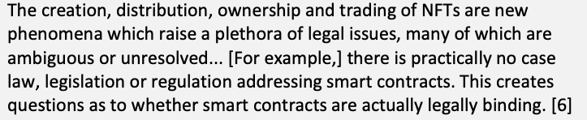
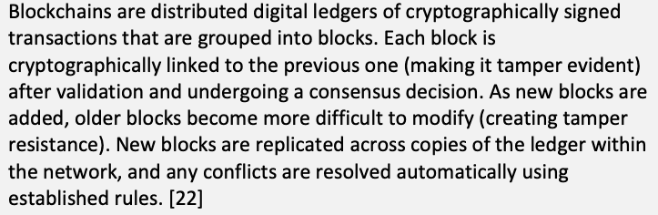
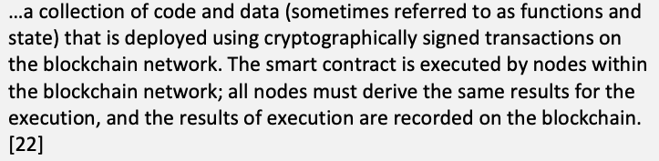
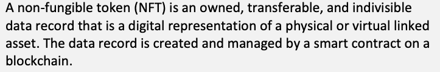

NIST IR 8472 日本語訳
英語タイトル : Non-Fungible Token Security日本語タイトル : 非代替性トークン（NFT）のセキュリティ
公開日 : 2024-03-01
原文URL : https://csrc.nist.gov/pubs/ir/8472/final
翻訳編集 : 自動生成（有志による非公式の日本語訳）, 原文取得日 : 2026-10-31, 訳文 : 321 / 322 ブロック
[要約] NIST IR 8472 は、非代替性トークン（NFT）技術を説明したうえで、潜在的なセキュリティ上の問題を特定し、論じる刊行物です。NFT 技術は、実在の資産（仮想資産と物理資産の両方）をブロックチェーン上で売買・交換できるようにする仕組みを提供します。本刊行物は、27 件の潜在的なセキュリティ上の問題の一覧を特定し、論じています。特定されたすべての問題は、セキュアな設計と実装を促進する体系的なセキュリティアプローチを用いることで対処できるとしています。
NIST Internal Report
NIST 内部報告書
NIST IR 8472
NIST IR 8472
Non-Fungible Token Security
非代替性トークン（NFT）のセキュリティ
Peter Mell Dylan Yaga
Peter Mell Dylan Yaga
This publication is available free of charge from: https://doi.org/10.6028/NIST.IR.8472
本刊行物は次の URL から無償で入手できます: https://doi.org/10.6028/NIST.IR.8472
NIST Internal Report
NIST 内部報告書
NIST IR 8472
NIST IR 8472
Non-Fungible Token Security
非代替性トークン（NFT）のセキュリティ
Peter Mell Dylan Yaga
Peter Mell Dylan Yaga
Computer Security Division Information Technology Laboratory
Computer Security Division（コンピュータセキュリティ部門） Information Technology Laboratory（情報技術研究所）
This publication is available free of charge from: https://doi.org/10.6028/NIST.IR.8472
本刊行物は次の URL から無償で入手できます: https://doi.org/10.6028/NIST.IR.8472
March 2024
2024年3月
［米国商務省の紋章。公的な標章のため、この非公式サイトには掲載していません。原本 PDF を参照してください。］
U.S. Department of Commerce Gina M. Raimondo, Secretary
米国商務省 Gina M. Raimondo 長官
National Institute of Standards and Technology
国立標準技術研究所（National Institute of Standards and Technology）
Laurie E. Locascio, NIST Director and Under Secretary of Commerce for Standards and Technology
Laurie E. Locascio、NIST 所長兼商務次官（標準・技術担当）
Certain commercial equipment, instruments, software, or materials, commercial or non-commercial, are identified in this paper in order to specify the experimental procedure adequately. Such identification does not imply recommendation or endorsement of any product or service by NIST, nor does it imply that the materials or equipment identified are necessarily the best available for the purpose.
本論文では、実験手順を十分に特定するため、商用・非商用を問わず、特定の機器、計器、ソフトウェア、または資材を挙げています。こうした特定は、NIST がいかなる製品やサービスも推奨または支持していることを意味せず、挙げた資材や機器がその目的に最適であるとは限らないことを意味するものでもありません。
There may be references in this publication to other publications currently under development by NIST in accordance with its assigned statutory responsibilities. The information in this publication, including concepts and methodologies, may be used by federal agencies even before the completion of such companion publications. Thus, until each publication is completed, current requirements, guidelines, and procedures, where they exist, remain operative. For planning and transition purposes, federal agencies may wish to closely follow the development of these new publications by NIST.
本刊行物には、NIST が法令上割り当てられた責務に従って現在策定中のほかの刊行物への言及が含まれる場合があります。概念や方法論を含む本刊行物の情報は、そうした関連刊行物の完成前であっても、連邦政府機関が使用してもかまいません。したがって、各刊行物が完成するまでは、現行の要件、ガイドライン、および手順が存在する場合、それらは引き続き有効です。計画および移行のため、連邦機関は、NIST によるこれらの新しい刊行物の策定状況を注意深く追うことを検討してもよいです。
Organizations are encouraged to review all draft publications during public comment periods and provide feedback to NIST. Many NIST cybersecurity publications, other than the ones noted above, are available at https://csrc.nist.gov/publications.
組織は、すべてのドラフト刊行物についてパブリックコメント期間中に確認し、NIST にフィードバックを提供することが推奨されます。上記以外の NIST のサイバーセキュリティ関連刊行物の多くは https://csrc.nist.gov/publications で入手できます。
NIST Technical Series Policies
NIST Technical Series の方針
Copyright, Use, and Licensing Statements
著作権・使用・ライセンスに関する声明
NIST Technical Series Publication Identifier Syntax
NIST Technical Series 刊行物識別子の構文
Publication History
刊行履歴
Approved by the NIST Editorial Review Board on 2024-02-02
2024-02-02 に NIST Editorial Review Board が承認
How to Cite this NIST Technical Series Publication:
本 NIST Technical Series 刊行物の引用方法:
Mell P, Yaga D (2024) Non-Fungible Token Security. (National Institute of Standards and Technology, Gaithersburg, MD), NIST Interagency or Internal Report (IR) NIST IR 8472. https://doi.org/10.6028/NIST.IR.8472
Mell P, Yaga D (2024) Non-Fungible Token Security. (National Institute of Standards and Technology, Gaithersburg, MD), NIST Interagency or Internal Report (IR) NIST IR 8472. https://doi.org/10.6028/NIST.IR.8472
Author ORCID iDs
著者の ORCID iD
Peter Mell: 0000-0003-2938-897X
Dylan Yaga: 0000-0003-4058-3645
Peter Mell: 0000-0003-2938-897X
Dylan Yaga: 0000-0003-4058-3645
Contact Information
連絡先
NISTIR8472@nist.gov
NISTIR8472@nist.gov
National Institute of Standards and Technology Attn: Computer Security Division, Information Technology Laboratory 100 Bureau Drive (Mail Stop 8930) Gaithersburg, MD 20899-8930
National Institute of Standards and Technology Attn: Computer Security Division, Information Technology Laboratory 100 Bureau Drive (Mail Stop 8930) Gaithersburg, MD 20899-8930
Additional Information
追加情報
Additional information about this publication is available at https://csrc.nist.gov/pubs/ir/8472/final, including related content, potential updates, and document history.
本刊行物に関する追加情報（関連コンテンツ、更新の可能性、文書の履歴を含む）は https://csrc.nist.gov/pubs/ir/8472/final で入手できます。
All comments are subject to release under the Freedom of Information Act (FOIA).
寄せられたコメントはすべて、情報自由法（FOIA）に基づく公開の対象となります。
Abstract
概要
Non-fungible token (NFT) technology provides a mechanism to enable real assets (both virtual and physical) to be sold and exchanged on a blockchain. While NFTs are most often used for autographing digital assets (associating one’s name with a digital object), they utilize a strong cryptographic foundation that may enable them to regularly support ownership-transferring sales of digital and physical objects. For this, NFT implementations need to address potential security concerns to reduce the risk to purchasers. This publication explains NFT technology and then identifies and discusses a list of 27 potential security issues. All of the identified issues can be addressed through use of a systematic security approach that promotes a secure design and implementation.
非代替性トークン（NFT）技術は、実在の資産（仮想資産と物理資産の両方）をブロックチェーン上で売買・交換できるようにする仕組みを提供します。NFT は、デジタル資産へのサイン（自分の名前をデジタルオブジェクトに関連付けること）に最もよく使われますが、強力な暗号技術の基盤を利用しており、デジタルオブジェクトや物理オブジェクトの所有権の移転を伴う売買を継続的に支える可能性があります。そのため、NFT の実装では、購入者のリスクを低減するために潜在的なセキュリティ上の懸念に対処する必要があります。本刊行物は、NFT 技術を説明したうえで、27 件の潜在的なセキュリティ上の問題を特定し、論じます。特定されたすべての問題は、セキュアな設計と実装を促進する体系的なセキュリティアプローチを用いることで対処できます。
Keywords
キーワード
blockchain; definition; ERC-721; non-fungible token; properties; security; smart contract.
ブロックチェーン、定義、ERC-721、非代替性トークン、特性、セキュリティ、スマートコントラクト。
Reports on Computer Systems Technology
コンピュータシステム技術に関する報告書
The Information Technology Laboratory (ITL) at the National Institute of Standards and Technology (NIST) promotes the U.S. economy and public welfare by providing technical leadership for the Nation’s measurement and standards infrastructure. ITL develops tests, test methods, reference data, proof of concept implementations, and technical analyses to advance the development and productive use of information technology. ITL’s responsibilities include the development of management, administrative, technical, and physical standards and guidelines for the cost-effective security and privacy of other than national security-related information in federal information systems.
国立標準技術研究所（NIST）の情報技術研究所（ITL）は、国の計測・標準インフラに技術的なリーダーシップを提供することで、米国経済と公共の福祉を促進しています。ITL は、情報技術の開発と生産的な利用を進めるため、テスト、テスト方法、参照データ、概念実証の実装、および技術分析を開発しています。ITL の責務には、連邦政府の情報システムにおける国家安全保障関連以外の情報について、費用対効果の高いセキュリティとプライバシーを確保するための管理上・行政上・技術上・物理上の標準およびガイドラインの策定が含まれます。
Audience
想定読者
This publication is intended for readers who want to better understand how NFTs function at a technical level and the associated potential security risks. This includes both purchasers of NFTs and developers of NFT implementations.
本刊行物は、NFT が技術的なレベルでどのように機能するか、および関連する潜在的なセキュリティリスクをよりよく理解したい読者を想定しています。これには、NFT の購入者と NFT 実装の開発者の両方が含まれます。
Patent Disclosure Notice
特許開示に関する通知
NOTICE: ITL has requested that holders of patent claims whose use may be required for compliance with the guidance or requirements of this publication disclose such patent claims to ITL. However, holders of patents are not obligated to respond to ITL calls for patents and ITL has not undertaken a patent search in order to identify which, if any, patents may apply to this publication.
通知: ITL は、本刊行物のガイダンスまたは要件への準拠にその使用が必要となる可能性のある特許請求項の保有者に対し、当該特許請求項を ITL に開示するよう依頼しました。ただし、特許の保有者には ITL の特許照会に回答する義務はなく、ITL は、本刊行物に該当する特許があるとすればどれかを特定するための特許調査を行っていません。
As of the date of publication and following call(s) for the identification of patent claims whose use may be required for compliance with the guidance or requirements of this publication, no such patent claims have been identified to ITL.
公表日の時点で、本刊行物のガイダンスまたは要件への準拠にその使用が必要となる可能性のある特許請求項の特定を求める照会を行いましたが、そのような特許請求項は ITL に対して特定されていません。
No representation is made or implied by ITL that licenses are not required to avoid patent infringement in the use of this publication.
本刊行物の使用にあたり、特許侵害を避けるためにライセンスが不要であることを、ITL は表明も示唆もしていません。
Table of Contents
目次
1. Introduction
1. はじめに
Non-fungible token (NFT) technology provides a mechanism to enable real assets (both virtual and physical) to be sold and exchanged on a blockchain. It does this by creating a unique blockchain token to represent each asset. A blockchain smart contract manages a group of tokens and enables them to be securely transferred between blockchain accounts. The verification of NFT ownership by an account is straightforward. This architecture provides a strong cryptographic foundation for NFT sales.
非代替性トークン（NFT）技術は、実在の資産（仮想資産と物理資産の両方）をブロックチェーン上で売買・交換できるようにする仕組みを提供します。そのために、各資産を表す一意のブロックチェーントークンを作成します。ブロックチェーンのスマートコントラクトがトークンの集まりを管理し、ブロックチェーンのアカウント間でトークンを安全に移転できるようにします。アカウントによる NFT の所有の検証は簡単です。このアーキテクチャは、NFT の売買に強力な暗号技術の基盤を提供します。
NFTs are commonly used for photography, digital art, trading cards, and music [1]. Usually, what is purchased is the right to “autograph” a digital asset with a blockchain ledger entry. In this case, ownership rights are not usually conveyed to the purchaser [6], and the autographing right is not necessarily exclusive. In other cases, sales of the digital tokens are intended by the seller to convey a sale of ownership rights over the linked digital assets. Someday, the technology may broadly support the secure record of physical asset sales (e.g., real estate or cars). NFTs can also be used for more utilitarian purposes, such as voting rights, membership, or benefits [2].
NFT は、写真、デジタルアート、トレーディングカード、音楽によく使われます [1]。通常、購入されるのは、デジタル資産にブロックチェーンの台帳エントリで「サイン」する権利です。この場合、通常は購入者に所有権は移転されず [6]、サインする権利が排他的であるとも限りません。それ以外の場合には、売り手は、デジタルトークンの販売によって、リンクされたデジタル資産の所有権を移転することを意図しています。いつの日か、この技術が物理資産（不動産や自動車など）の売買の安全な記録を幅広く支えるようになるかもしれません。NFT は、議決権、会員資格、特典など、より実用的な目的にも使用できます [2]。
The first NFT was published in 2014 [3]. The market remained nascent for years but then grew dramatically in 2021 and peaked at $18 billion dollars [4]. The most expensive NFT bought by a single person went for $69.3 million in 2021 [5]. The market peaked at that point and has dropped significantly. For example, an NFT of the first tweet was sold in 2021 for $2.9 million; it was put up for auction in April 2023 and received the highest bid of $280 [36].
最初の NFT は 2014 年に公開されました [3]。市場は何年もの間、発展途上のままでしたが、2021 年に劇的に成長し、180 億ドルでピークに達しました [4]。1 人の購入者が購入した最も高額な NFT は、2021 年に 6930 万ドルで落札されました [5]。市場はその時点でピークに達し、その後大きく下落しました。たとえば、最初のツイートの NFT は 2021 年に 290 万ドルで売却されましたが、2023 年 4 月にオークションに出品されたとき、最高入札額は 280 ドルでした [36]。
The purpose of this publication is to evaluate NFT technology and identify potential security concerns. This will promote the secure development of NFT implementations and raise awareness as to possible security concerns. The focus is on the smart contract representation and sales of NFTs and associated blockchain aspects.
本刊行物の目的は、NFT 技術を評価し、潜在的なセキュリティ上の懸念を特定することです。これにより、NFT 実装のセキュアな開発を促進し、起こりうるセキュリティ上の懸念についての認識を高めます。焦点は、NFT のスマートコントラクトによる表現と売買、および関連するブロックチェーンの側面です。
A descriptive definition is provided to enable the reader to understand NFTs from a technical perspective. An NFT is not the asset “owned” but, rather, a data record within a smart contract. This definition is used to derive a set of properties inherent to NFTs. Each of these properties is then evaluated to identify 27 potential security concerns that should be addressed by NFT implementations.
読者が NFT を技術的な観点から理解できるよう、記述的な定義を示します。NFT は「所有」される資産ではなく、スマートコントラクト内のデータレコードです。この定義を用いて、NFT に固有の一連の特性を導き出します。次に、これらの各特性を評価して、NFT の実装が対処すべき 27 件の潜在的なセキュリティ上の懸念を特定します。
Legal discussion and analysis of NFTs are out of scope for this paper; the focus here is on the technology. However, the legal aspects are just as important as the technical ones. Art Law & More says that
NFT に関する法的な議論と分析は本論文の範囲外であり、ここでの焦点は技術にあります。しかし、法的な側面は技術的な側面と同様に重要です。Art Law & More は次のように述べています。
The creation, distribution, ownership and trading of NFTs are new phenomena which raise a plethora of legal issues, many of which are ambiguous or unresolved... [For example,] there is practically no case law, legislation or regulation addressing smart contracts. This creates questions as to whether smart contracts are actually legally binding. [6]
原本PDFの抜粋画像

NFT の作成、配布、所有、取引は新しい現象であり、数多くの法的問題を生じさせ、その多くは曖昧であるか未解決です…［たとえば］スマートコントラクトを扱う判例、法律、規制は事実上存在しません。このため、スマートコントラクトが実際に法的拘束力を持つのかどうかという疑問が生じます。[6]
Another major concern is that the purchase of an NFT does not necessarily convey the copyright (i.e., the purchaser cannot make, sell, or publicly display copies). Rather, the copyright often remains with the original owner, making such NFTs “digital autographs” [6]. For example, the previously cited $69.3 million NFT purchase did not convey the copyright of the art to the purchaser [21]. This is analogous to the physical world where the purchase of a painting or baseball card rarely conveys copywrite; if it does convey then “the transfer must be express and in writing” [37]. In general, the legal issues surrounding NFTs remain legally murky or unresolved. This is a new area undergoing maturation and legal precedent remains to be set. A discussion of the legal issues is available from [6], [2], and [37].
もう 1 つの大きな懸念は、NFT を購入しても、著作権が移転するとは限らない（すなわち、購入者は複製を作成、販売、公開展示できない）ことです。むしろ、著作権は元の所有者に残ることが多く、そのような NFT は「デジタルのサイン」になります [6]。たとえば、先に引用した 6930 万ドルの NFT の購入では、作品の著作権は購入者に移転しませんでした [21]。これは、物理世界で絵画や野球カードを購入しても著作権が移転することはまれであり、移転する場合には「移転は明示的かつ書面によらなければならない」ことに似ています [37]。一般に、NFT をめぐる法的問題は、法的に不明瞭または未解決のままです。これは成熟が進みつつある新しい分野であり、法的な先例はこれから確立されます。法的問題に関する議論は [6]、[2]、[37] で入手できます。
The remainder of this publication is organized as follows. Section 2 provides a short background on blockchains and tokens. Section 3 provides a descriptive NFT definition, a list of NFT properties, and related security considerations for each property. Section 4 is a summary of the 27 potential security concerns identified in Section 3.3. Section 5 reviews notable NFT standards. Section 6 discusses NFT marketplaces. Section 7 is the conclusion.
本刊行物の以降の構成は次のとおりです。第 2 節では、ブロックチェーンとトークンの簡単な背景を示します。第 3 節では、NFT の記述的な定義、NFT の特性の一覧、および各特性に関連するセキュリティ上の考慮事項を示します。第 4 節は、第 3.3 節で特定した 27 件の潜在的なセキュリティ上の懸念の要約です。第 5 節では、主要な NFT 標準を概観します。第 6 節では、NFT マーケットプレイスを論じます。第 7 節は結論です。
1.1. Scope
1.1. 範囲
The focus of this paper’s research was on the most common NFT technology used, that based on the Ethereum Request for Comment 721 Non-Fungible Token Standard (ERC-721) and equivalent standards on other blockchains. All non-ERC-721-based NFT systems are out of scope of this paper.
本論文の研究の焦点は、最も一般的に使用されている NFT 技術、すなわち Ethereum Request for Comment 721 Non-Fungible Token Standard（ERC-721）と、他のブロックチェーン上の同等の標準に基づくものでした。ERC-721 に基づかない NFT システムはすべて、本論文の範囲外です。
Despite this narrow focus, much of the security analysis may still apply to out-of-scope NFT systems, even non-blockchain and non-smart contract approaches. Readers interested in such systems should consider how alternate approaches implement the NFT properties, enumerated in Section 3.2 and evaluated in Section 3.3. That analysis can then be used to determine which of the property-mapped security considerations listed in Section 4 apply to non-ERC-721 systems of interest.
この限定的な焦点にもかかわらず、セキュリティ分析の多くは、範囲外の NFT システム（ブロックチェーンやスマートコントラクトによらない方式を含む）にも当てはまる可能性があります。そのようなシステムに関心のある読者は、第 3.2 節で列挙され第 3.3 節で評価した NFT の特性を、別の方式がどのように実装しているかを検討すべきです。その分析を用いて、第 4 節に挙げた、特性に対応付けられたセキュリティ上の考慮事項のうち、関心のある ERC-721 以外のシステムに適用されるものを判断できます。
Security analyses of NFT marketplaces are also out of scope. The focus in this work is on the NFT smart contracts and the services they provide (although this work does cover security concerns with non-blockchain stored assets and asset information). Security analyses of NFT marketplaces are available from [31] and [32].
NFT マーケットプレイスのセキュリティ分析も範囲外です。本研究の焦点は、NFT のスマートコントラクトと、それらが提供するサービスにあります（ただし、本研究は、ブロックチェーンに保存されない資産と資産情報に関するセキュリティ上の懸念も扱います）。NFT マーケットプレイスのセキュリティ分析は [31] と [32] で入手できます。
1.2. Example Non-ERC-271 NFTs
1.2. ERC-271 ではない NFT の例
An early example of a non-ERC-721 NFT is Colored Coins on the Bitcoin blockchain. These encode unique information within a coin’s metadata to allow it link to some asset while making it unique from all others. The metadata is encoded onto a Satoshi, which is the smallest unit of transfer for Bitcoin. Such coins are then changed from being fungible (i.e., interchangeable) to non-fungible (unique). Another newer example is Bitcoin ordinals with Bitcoin Request for Comment 20 (BRC-20) [34]. This encodes (JavaScript Object Notation) JSON metadata onto a Satoshi in a manner similar to Colored Coins but utilizing different methods.
ERC-721 に基づかない NFT の初期の例は、Bitcoin ブロックチェーン上の Colored Coins です。これは、コインのメタデータ内に一意の情報を符号化し、コインを何らかの資産にリンクさせつつ、ほかのすべてのコインと区別できるようにします。メタデータは、Bitcoin の最小の転送単位である Satoshi に符号化されます。こうしたコインは、代替性のあるもの（すなわち交換可能なもの）から、非代替性のもの（一意のもの）へと変わります。より新しい別の例が、Bitcoin Request for Comment 20（BRC-20）[34] を用いた Bitcoin Ordinals です。これは、Colored Coins と同様の形で、ただし異なる方法を用いて、JSON（JavaScript Object Notation）メタデータを Satoshi に符号化します。
2. Background
2. 背景
This section provides definitions for blockchains, smart contracts, and tokens as a foundation for the discussion of NFTs in Section 3.
本節では、第 3 節の NFT の議論の基礎として、ブロックチェーン、スマートコントラクト、トークンの定義を示します。
2.1. Blockchains
2.1. ブロックチェーン
According to NIST IR 8202, Blockchain Technology Overview, blockchains are “tamper evident and tamper resistant digital ledgers implemented in a distributed fashion (i.e., without a central repository) and usually without a central authority (i.e., a bank, company, or government)” [22]. NIST IR 8202 then provides a more formal definition:
NIST IR 8202 Blockchain Technology Overview によると、ブロックチェーンとは、「改ざんの検知が可能で改ざんに耐性のあるデジタル台帳であり、分散して（すなわち中央のリポジトリなしに）、通常は中央の権限者（銀行、企業、政府など）なしに実装されたもの」です [22]。NIST IR 8202 は続いて、より正式な定義を示しています。
Blockchains are distributed digital ledgers of cryptographically signed transactions that are grouped into blocks. Each block is cryptographically linked to the previous one (making it tamper evident) after validation and undergoing a consensus decision. As new blocks are added, older blocks become more difficult to modify (creating tamper resistance). New blocks are replicated across copies of the ledger within the network, and any conflicts are resolved automatically using established rules. [22]
原本PDFの抜粋画像

ブロックチェーンは、ブロックにまとめられた、暗号学的に署名されたトランザクションの分散型デジタル台帳です。各ブロックは、検証とコンセンサスによる決定を経た後に、前のブロックに暗号学的にリンクされます（これにより改ざんの検知が可能になります）。新しいブロックが追加されるにつれて、古いブロックは変更がより困難になります（これにより改ざん耐性が生まれます）。新しいブロックはネットワーク内の台帳のコピーに複製され、いかなる競合も、確立されたルールを用いて自動的に解決されます。[22]
2.2. Smart Contracts
2.2. スマートコントラクト
NIST IR 8202 defines a smart contract as follows:
NIST IR 8202 は、スマートコントラクトを次のように定義しています。
…a collection of code and data (sometimes referred to as functions and state) that is deployed using cryptographically signed transactions on the blockchain network. The smart contract is executed by nodes within the blockchain network; all nodes must derive the same results for the execution, and the results of execution are recorded on the blockchain. [22]
原本PDFの抜粋画像

…ブロックチェーンネットワーク上で、暗号学的に署名されたトランザクションを使って配備される、コードとデータ（関数と状態と呼ばれることもあります）の集まりです。スマートコントラクトはブロックチェーンネットワーク内のノードによって実行され、すべてのノードが実行について同じ結果を導き出さなければならず、実行結果はブロックチェーンに記録されます。[22]
In simpler terms, a smart contract is program that runs on a blockchain. It processes transactions and records state while leveraging the cryptographic security of the blockchain.
より単純に言えば、スマートコントラクトとは、ブロックチェーン上で動作するプログラムです。ブロックチェーンの暗号学的なセキュリティを活用しながら、トランザクションを処理し、状態を記録します。
2.3. Tokens
2.3. トークン
In the cryptocurrency community, the term token does not have an agreed upon definition. For the purposes of this publication, a token is a data record that is a digital representation of an asset (physical or virtual), managed by a smart contract, and stored on a blockchain. Tokens are not generally transferable between the smart contracts managing them, meaning that they are tied to a particular blockchain smart contract address. Each token represents some asset (e.g., cryptocurrency, digital artwork). Smart contract tokens usually follow one or more community token standards to enable interoperability with user wallets, exchanges, and other contracts (see Section 5). The transference of a token from one wallet to another involves the updating of the token owner’s address within the managing smart contract.
暗号通貨のコミュニティでは、トークンという用語に合意された定義はありません。本刊行物では、トークンとは、資産（物理的なものまたは仮想的なもの）をデジタルで表現したデータレコードであり、スマートコントラクトによって管理され、ブロックチェーン上に保存されるものを指します。トークンは一般に、それを管理するスマートコントラクト間で移転できません。つまり、特定のブロックチェーンのスマートコントラクトアドレスに結び付けられています。各トークンは、何らかの資産（暗号通貨、デジタルアートワークなど）を表します。スマートコントラクトのトークンは通常、ユーザーのウォレット、取引所、ほかのコントラクトとの相互運用性を可能にするため、1 つ以上のコミュニティのトークン標準に従います（第 5 節を参照）。トークンをあるウォレットから別のウォレットへ移転するには、管理しているスマートコントラクト内のトークン所有者のアドレスを更新します。
There are two types of tokens: fungible and non-fungible. An NFT is a non-fungible token, and it is unique and not interchangeable with others (a definition of NFTs is provided in Section 3). Fungible tokens are identical and interchangeable. They represent cryptocurrencies that are not native to a blockchain and are instead managed by smart contracts (e.g., stablecoins). In contrast, a native blockchain cryptocurrency is tied to the blockchain itself and is used to pay for blockchain gas (e.g., Bitcoin and Ethereum). Smart contracts represent fungible tokens by keeping a list of addresses that own tokens and how many tokens each address owns. Fungible tokens are often represented in smart contracts using the Ethereum Request for Comments (ERC) standard ERC-20 or a similar standard on a non-Ethereum blockchain. This is discussed in Section 5.1.
トークンには、代替性のものと非代替性のものの 2 種類があります。NFT は非代替性トークンであり、一意で、ほかのトークンと交換できません（NFT の定義は第 3 節で示します）。代替性トークンは同一で、交換可能です。これらは、ブロックチェーンのネイティブではなく、スマートコントラクトによって管理される暗号通貨（ステーブルコインなど）を表します。対照的に、ブロックチェーンのネイティブな暗号通貨は、ブロックチェーン自体に結び付けられ、ブロックチェーンのガスの支払いに使われます（Bitcoin や Ethereum など）。スマートコントラクトは、トークンを所有するアドレスと、各アドレスが所有するトークンの数の一覧を保持することで、代替性トークンを表現します。代替性トークンは、スマートコントラクトでは、Ethereum Request for Comments（ERC）標準の ERC-20、または Ethereum 以外のブロックチェーンにおける同様の標準を使って表現されることがよくあります。これについては第 5.1 節で論じます。
3. Definition, Properties, and Security Evaluations
3. 定義、特性、およびセキュリティ評価
This section provides a definition for NFTs, related properties, and an evaluation of each property to reveal potential security concerns.
本節では、NFT の定義、関連する特性、および潜在的なセキュリティ上の懸念を明らかにするための各特性の評価を示します。
3.1. NFT Definition
3.1. NFT の定義
The definition provided below is intended to be descriptive and inclusive of all NFTs in use today. It is not intended to define what is and what is not an NFT nor is it intended to limit future NFT technology. The purpose of the definition and resultant properties is to enable the reader to understand current technology and to provide a foundation for an exploration of potential security issues.
以下に示す定義は、記述的であり、現在使用されているすべての NFT を包含することを意図したものです。何が NFT で何が NFT でないかを定義することも、将来の NFT 技術を制限することも意図していません。この定義と、そこから導かれる特性の目的は、読者が現在の技術を理解できるようにし、潜在的なセキュリティ問題の検討の基礎を提供することです。
A non-fungible token (NFT) is an owned, transferable, and indivisible data record that is a digital representation of a physical or virtual linked asset. The data record is created and managed by a smart contract on a blockchain.
原本PDFの抜粋画像

非代替性トークン（NFT）とは、所有され、移転可能で、分割できないデータレコードであり、リンクされた物理資産または仮想資産をデジタルで表現したものです。このデータレコードは、ブロックチェーン上のスマートコントラクトによって作成および管理されます。
A common misconception is that an NFT is an asset. A person who buys an NFT might believe that they bought an asset. However, an NFT is not an asset. It is a token — a record maintained by a smart contract on a blockchain. The record may point to an asset or represent some intangible asset. The person buying an NFT is then buying a token. The token may or may not convey to the purchaser any legal rights over the asset.
よくある誤解は、NFT が資産であるというものです。NFT を買った人は、資産を買ったと信じているかもしれません。しかし、NFT は資産ではありません。それはトークン、すなわちブロックチェーン上のスマートコントラクトが維持するレコードです。そのレコードは、資産を指す場合も、何らかの無形の資産を表す場合もあります。したがって、NFT を購入する人は、トークンを購入しています。そのトークンは、購入者に資産に対する法的権利を伝える場合も、伝えない場合もあります。
NFTs are often represented by standard ERC-721 in smart contracts on Ethereum or a similar standard on another blockchain (see Section 5 on token standards for more details). These standards provide minimum functionality to be implemented by NFT implementations. Additional functionality is possible, even expected. For example, NFT smart contracts may have an owner role that can perform management functions (e.g., [28]). Such functionality can include upgrading to a new smart contract (e.g., [29]). Such upgrades can provide the owner arbitrary functionality, including the expiring or delisting of purchased NFTs (e.g., [29]).
NFT は、Ethereum 上のスマートコントラクトでは標準の ERC-721、または他のブロックチェーン上の同様の標準で表現されることが多くあります（詳細はトークン標準に関する第 5 節を参照）。これらの標準は、NFT の実装が実装すべき最小限の機能を提供します。追加の機能も可能であり、想定されてさえいます。たとえば、NFT のスマートコントラクトには、管理機能を実行できる所有者ロールがある場合があります（例: [28]）。そのような機能には、新しいスマートコントラクトへのアップグレードが含まれる場合があります（例: [29]）。そのようなアップグレードにより、所有者は、購入された NFT の期限切れや掲載取り下げを含む、任意の機能を持つことができます（例: [29]）。
3.2. NFT Properties
3.2. NFT の特性
The following non-exhaustive set of NFT properties can be derived from this definition. Most correctly functioning and secured NFT implementations will contain these properties (see Section 3.3 for caveats to this).
この定義から、次の網羅的でない一連の NFT の特性を導き出せます。正しく機能し、保護されているほとんどの NFT 実装は、これらの特性を備えています（これに関する留意点は第 3.3 節を参照）。
1.Owned: NFTs designate ownership by recording a blockchain address.
1.所有（Owned）: NFT は、ブロックチェーンのアドレスを記録することで所有権を指定します。
2.Transferable: Owners and designated approved entities can transfer the ownership of NFTs to other addresses.
2.移転可能（Transferable）: 所有者と、指定された承認済みのエンティティは、NFT の所有権をほかのアドレスに移転できます。
3.Indivisible: NFTs cannot be subdivided (although the ownership may be fractionalized).
3.分割不可（Indivisible）: NFT は細分化できません（ただし、所有権は分割される場合があります）。
4.Linked: NFTs have references to the asset that they represent.
4.リンク（Linked）: NFT は、それが表す資産への参照を持ちます。
5.Recorded: NFTs are smart contract data records stored on a blockchain.
5.記録（Recorded）: NFT は、ブロックチェーン上に保存されたスマートコントラクトのデータレコードです。
6.Provenance: NFTs have their chain of ownership recorded.
6.来歴（Provenance）: NFT は、所有権の連鎖が記録されています。
7.Permanence: NFTs are normally indestructible (although some are designed to be burned).
7.永続性（Permanence）: NFT は通常、破壊できません（ただし、バーン［焼却］されるように設計されたものもあります）。
8.Immutable: The asset that an NFT represents cannot be modified.
8.不変（Immutable）: NFT が表す資産は、変更できません。
9.Unique: Each NFT represents a unique asset.
9.一意（Unique）: 各 NFT は、一意の資産を表します。
10.Authentic: Each NFT asset is what the NFT claims it to be (e.g., artwork from a particular artist).
10.真正（Authentic）: 各 NFT の資産は、NFT が主張するとおりのものです（特定のアーティストの作品など）。
11.Authorized: Each NFT asset has been authorized by an owner to be sold as an NFT.
11.認可（Authorized）: 各 NFT の資産は、所有者によって NFT として販売することを認可されています。
3.3. Security Evaluation of NFT Properties
3.3. NFT の特性のセキュリティ評価
This section evaluates potential security issues related to each property presented in Section 3.2. Some of these properties should be provided by the NFT smart contract. Some are inherently provided by the underlying blockchain. Some should be provided by the human management of the NFT smart contract. All of these security issues are addressable through use of a systematic security approach to both design and implementation (such as [35]).
本節では、第 3.2 節で示した各特性に関連する潜在的なセキュリティ問題を評価します。これらの特性の一部は、NFT のスマートコントラクトが提供すべきものです。一部は、基盤となるブロックチェーンが本来的に提供します。一部は、NFT のスマートコントラクトの人による管理が提供すべきものです。これらのセキュリティ問題はすべて、設計と実装の両方に対する体系的なセキュリティアプローチ（[35] など）を用いることで対処できます。
A concise enumeration of the potential security issues revealed in the below analysis is provided in Section 4.
以下の分析で明らかになった潜在的なセキュリティ問題の簡潔な一覧は、第 4 節に示します。
3.3.1. Contract-Provided Properties
3.3.1. コントラクトが提供する特性
A properly constructed NFT smart contract should provide the properties of owned, transferable, indivisible, and linked. These properties are described below.
適切に構築された NFT のスマートコントラクトは、所有、移転可能、分割不可、リンクの特性を提供すべきです。これらの特性を以下に説明します。
3.3.1.1. Owned
3.3.1.1. 所有（Owned）
An NFT is often colloquially and incorrectly referred to as the “owned” asset. For example, a person may say that they own an NFT when referring to a piece of digital artwork. However, from a technical point of view, the NFT is a separate entity from the artwork. What an NFT owner definitively owns is a cryptocurrency token (they may or may not also own the linked asset). As defined previously, a cryptocurrency token is a data record managed by a smart contract and stored on a blockchain. The data record contains the metadata (i.e., a collection of data values) necessary to manage the NFT ownership and to link the NFT to a referenced asset.
NFT は、口語的には、また誤って、「所有」される資産と呼ばれることがよくあります。たとえば、デジタルアートワークについて、NFT を所有していると言う人がいるかもしれません。しかし、技術的な観点では、NFT はアートワークとは別個のエンティティです。NFT の所有者が確実に所有しているのは、暗号通貨トークンです（リンクされた資産も所有しているかもしれませんし、していないかもしれません）。先に定義したように、暗号通貨トークンとは、スマートコントラクトによって管理され、ブロックチェーン上に保存されるデータレコードです。このデータレコードには、NFT の所有権を管理し、NFT を参照先の資産にリンクするために必要なメタデータ（すなわち、データ値の集まり）が含まれます。
This distinction is important because ownership of the token does not necessarily legally indicate ownership of the related asset (e.g., digital artwork). This is because a smart contract does not necessarily have the legal authority to designate ownership of a referenced asset (technically, anyone can create an NFT linked to anything). Exploring this legal issue is out of scope for this work. However, seller of NFTs should clearly convey the rights provided to purchasers and buyers should understand the stated rights prior to purchase.
この区別が重要なのは、トークンの所有が、関連する資産（デジタルアートワークなど）の所有を法的に示すとは限らないためです。これは、スマートコントラクトが、参照先の資産の所有権を指定する法的権限を必ずしも持たないためです（技術的には、誰でも何にでもリンクした NFT を作成できます）。この法的問題の検討は、本研究の範囲外です。しかし、NFT の販売者は、購入者に与えられる権利を明確に伝えるべきです。また、購入者は購入前に、明示された権利を理解すべきです。
It is tempting to think of these tokens like physical bills that can be handed from one person to another to change ownership. However, NFTs are maintained with the associated smart contract. This is because the tokens are data records of the smart contract that must stay with the smart contract and are, thus, normally locked into a specific smart contract and blockchain. The owner’s cryptocurrency wallets then record the smart contract address and a token identifier (they don’t hold the token as a physical wallet holds a bill). It is the smart contract that manages the tokens and is the authoritative repository for those tokens.
これらのトークンを、所有権を変更するために人から人へ手渡せる紙幣のようなものと考えたくなるかもしれません。しかし、NFT は関連するスマートコントラクトとともに維持されます。これは、トークンがスマートコントラクトのデータレコードであり、スマートコントラクトとともにあり続けなければならないため、通常は特定のスマートコントラクトとブロックチェーンに固定されているからです。所有者の暗号通貨ウォレットは、スマートコントラクトのアドレスとトークン識別子を記録します（物理的なウォレットが紙幣を保持するようには、トークンを保持しません）。トークンを管理し、それらのトークンの信頼できる保管場所となるのは、スマートコントラクトです。
Smart contracts represent NFT ownership by keeping a list of unique tokens (i.e., data records) along with the owner of each token. The owner is identified only by a blockchain address. The data fields typically recorded for a non-NFT purchase are not present. There are no name, physical address, phone number, or other identifying data. This keeps the owners pseudonymous (identified only by their blockchain address). This is done for privacy concerns because all data stored by the smart contract are public on the blockchain.
スマートコントラクトは、一意のトークン（すなわちデータレコード）の一覧を、各トークンの所有者とともに保持することで、NFT の所有権を表現します。所有者は、ブロックチェーンのアドレスだけで識別されます。NFT 以外の購入で通常記録されるデータフィールドは存在しません。氏名、住所、電話番号、その他の識別データはありません。これにより、所有者は仮名のままとなります（ブロックチェーンのアドレスだけで識別されます）。これは、スマートコントラクトが保存するすべてのデータがブロックチェーン上で公開されるため、プライバシーへの配慮から行われています。
If a blockchain account is compromised, then a malicious actor could obtain ownership rights for all NFTs owned by that account. This could happen, for example, through a blockchain wallet being hacked or through a blockchain account private key being stolen. The actor can then submit blockchain transactions to the NFT smart contract to transfer all of the blockchain account’s NFTs to an account that they own (i.e., stealing the NFTs). They would likely then quickly sell the NFTs to avoid the (unlikely) possibility that the initial owner could convince the smart contract manager to reverse the transactions that stole the NFTs.
ブロックチェーンのアカウントが危殆化した場合、悪意のある行為者は、そのアカウントが所有するすべての NFT の所有権を得る可能性があります。これは、たとえば、ブロックチェーンのウォレットがハッキングされた場合や、ブロックチェーンのアカウントの秘密鍵が盗まれた場合に起こりえます。その行為者は、NFT のスマートコントラクトにブロックチェーンのトランザクションを送信して、そのブロックチェーンアカウントのすべての NFT を、自分が所有するアカウントに移転できます（すなわち NFT を盗めます）。その後、最初の所有者が、NFT を盗んだトランザクションをスマートコントラクトの管理者に取り消させることができるという（ありそうにない）可能性を避けるため、おそらくすぐに NFT を売却するでしょう。
3.3.1.2. Transferable
3.3.1.2. 移転可能（Transferable）
The NFT smart contract provides functions to enable the transfer of tokens between owners. As previously discussed, the transfer of a token is simply an update to the ownership field in the token’s smart contract data record. The owner is allowed to transfer a token to another blockchain address by submitting a blockchain transaction. Typically, the owner is also allowed to approve another address to take possession of the token as well as approve one or more accounts to manage tokens on the owner’s behalf. See Section 5.2 for more details.
NFT のスマートコントラクトは、所有者間でトークンを移転できるようにする関数を提供します。先に論じたように、トークンの移転は、トークンのスマートコントラクトのデータレコードにある所有権フィールドの更新にすぎません。所有者は、ブロックチェーンのトランザクションを送信することで、トークンを別のブロックチェーンアドレスに移転できます。通常、所有者は、トークンの占有を別のアドレスに承認することや、所有者に代わってトークンを管理する 1 つ以上のアカウントを承認することもできます。詳細は第 5.2 節を参照してください。
The smart contract may or may not be designed to allow the contract manager to transfer tokens. If the manager can transfer tokens, then stolen tokens could be restored. However, this becomes challenging if stolen tokens are quickly sold because there would then exist two owners who had spent funds and been granted NFT ownership by the smart contract. It could also be challenging for an owner to prove to the manager that their tokens were stolen, for example when an attacker steals a purchaser’s private key and executes an otherwise valid transaction to change ownership of the NFT.
スマートコントラクトは、コントラクトの管理者がトークンを移転できるように設計されている場合も、そうでない場合もあります。管理者がトークンを移転できる場合、盗まれたトークンを復元できる可能性があります。しかし、盗まれたトークンがすぐに売却されると、資金を支払い、スマートコントラクトから NFT の所有権を付与された所有者が 2 人存在することになるため、これは困難になります。また、所有者が自分のトークンが盗まれたことを管理者に証明することも困難な場合があります。たとえば、攻撃者が購入者の秘密鍵を盗み、NFT の所有権を変更する、それ以外の点では有効なトランザクションを実行した場合です。
The default for smart contract NFTs following widely adopted standards is for the manager to not be able to transfer tokens. This makes the restoration of stolen tokens impossible, but it also provides owners with assurance that the manager will not confiscate their tokens (either maliciously or because of a legal order). However, NFT smart contracts likely have a mechanism to allow managers to update the code of the smart contract to provide for maintenance and upgrading of the NFT management infrastructure. The updated code could provide managers new privileges (including token transfer abilities) over both existing and to-be-created tokens.
広く採用されている標準に従うスマートコントラクトの NFT では、既定では管理者がトークンを移転できません。これにより、盗まれたトークンの復元は不可能になりますが、管理者が（悪意をもって、あるいは法的命令によって）所有者のトークンを没収しないという保証を、所有者に提供することにもなります。しかし、NFT のスマートコントラクトには、NFT 管理基盤の保守とアップグレードのために、管理者がスマートコントラクトのコードを更新できる仕組みがある可能性が高いです。更新されたコードは、既存のトークンと今後作成されるトークンの両方に対して、管理者に（トークンを移転する能力を含む）新たな特権を与える可能性があります。
If the smart contract contains coding errors, there may be a vulnerability that enables an attacker to steal tokens. An evaluation of possible vulnerabilities in NFT contracts is available from [30]. The attacker would then likely sell the tokens quickly to obtain cryptocurrency because after launching the attack, their approach would be publicly visible on the blockchain. Others could then launch the same attack, or the contract manager could use the same vulnerability to restore tokens to their owners. If the contract manager can regain control of the smart contract, tokens could be restored. However, the attacker would still have the funds obtained through illegal token sales and the sold tokens would each have two owners (the original owners to whom the tokens are restored and the subsequent purchasers that unwittingly bought the stolen tokens).
スマートコントラクトにコーディングエラーが含まれていると、攻撃者がトークンを盗める脆弱性がある可能性があります。NFT のコントラクトに存在しうる脆弱性の評価は、[30] で入手できます。攻撃を開始した後は、その手口がブロックチェーン上で公に見えるため、攻撃者はおそらくすぐにトークンを売却して暗号通貨を得るでしょう。その後、他の者が同じ攻撃を行う可能性があり、あるいは、コントラクトの管理者が同じ脆弱性を使ってトークンを所有者に復元する可能性があります。コントラクトの管理者がスマートコントラクトの制御を取り戻せれば、トークンを復元できます。しかし、攻撃者は違法なトークン販売で得た資金を依然として持っており、売却されたトークンにはそれぞれ 2 人の所有者が存在することになります（トークンが復元された元の所有者と、盗まれたトークンとは知らずに購入したその後の購入者）。
3.3.1.3. Indivisible
3.3.1.3. 分割不可（Indivisible）
NFTs have the property that they are indivisible. This distinguishes them from fungible tokens that are divisible. An example of a divisible token would be a stable coin worth $1. This fungible token could be divided into two tokens, each worth $0.50. Since these assets are represented using numbers, it is simple to divide them.
NFT には、分割できないという特性があります。これにより、分割可能な代替性トークンと区別されます。分割可能なトークンの例は、1 ドルの価値があるステーブルコインです。この代替性トークンは、それぞれ 0.50 ドルの価値がある 2 つのトークンに分割できます。これらの資産は数値で表現されるため、分割は簡単です。
However, an NFT that represents a piece of digital artwork could not be divided in the same manner. Digital assets are typically non-fungible, meaning that they cannot be simply cut in two without damaging the original asset.
しかし、デジタルアートワークを表す NFT は、同じようには分割できません。デジタル資産は通常、非代替性であり、元の資産を損なわずに単純に 2 つに切ることはできません。
On a more technical level, an NFT is a token (explained in Section 2.3). A token is represented in a smart contract by a data record. Indivisibility then refers to the inability to divide the NFT data record into multiple parts. Data records do not naturally divide; they represent values for a fixed set of variables.
より技術的なレベルでは、NFT はトークン（第 2.3 節で説明）です。トークンは、スマートコントラクト内ではデータレコードで表されます。したがって、分割不可とは、NFT のデータレコードを複数の部分に分割できないことを指します。データレコードは自然には分割されません。固定された変数の集合の値を表すものだからです。
Some NFT owners may wish to divide their NFT by providing fractionalized ownership. The actual NFT itself is not split into multiple parts but, instead, locked into a new fractional NFT smart contract that then creates a specified number of new fungible tokens. These new fungible tokens represent shares of ownership of the NFT and can be traded, purchased, and sold on marketplaces (see Section 6) that specialize in fractional NFT sales (such as [7]). The largest fractional NFT sale to date – “The Merge” digital art – was bought jointly by 28,000 purchasers for $91.8 million [5].
NFT の所有者の中には、所有権を分割して提供することで、NFT を分けたいと考える人もいます。NFT 自体が複数の部分に分割されるのではなく、新しい分割 NFT のスマートコントラクトにロックされ、そのコントラクトが指定された数の新しい代替性トークンを作成します。これらの新しい代替性トークンは、NFT の所有権の持分を表し、分割 NFT の販売に特化したマーケットプレイス（[7] など）（第 6 節を参照）で取引、購入、売却できます。これまでで最大の分割 NFT の販売は、デジタルアート「The Merge」で、28,000 人の購入者が共同で 9180 万ドルで購入しました [5]。
Typically, a fractional NFT smart contract has a function that allows a buyout that can reverse the fractionalization process. This enables the original owner or a fractional investor to reclaim all of the ERC-20 fractional tokens and unlock the ERC-721 NFT from the fractional management smart contract. Unlocking the NFT means transferring ownership away from the fractional smart contract to the new owner. There are multiple methods by which to implement a buyout mechanism.
通常、分割 NFT のスマートコントラクトには、分割のプロセスを元に戻せる買い取りを可能にする関数があります。これにより、元の所有者または分割投資家は、ERC-20 の分割トークンをすべて取り戻し、分割管理スマートコントラクトから ERC-721 NFT のロックを解除できます。NFT のロック解除とは、所有権を分割スマートコントラクトから新しい所有者へ移転することを意味します。買い取りの仕組みを実装する方法は複数あります。
A common approach is to hold an auction. It requires a buyer to transfer a set amount of a specific ERC-20 fractional token to the smart contract. This then begins a time-limited auction in which all fractionalized owners can bid to keep their fractional shares. If the buyer wins, all ERC-20 tokens are reclaimed by the smart contract, and the buyer becomes the sole owner of the NFT. If the other users outbid the buyer and win the auction, then the buyout was unsuccessful, and the NFT remains fractionalized. If the NFT is successfully bought out, the fractionalized owners are compensated proportionally to the number of fractions that they held. If the buyout is unsuccessful, then the buyer is compensated with the amount that the remainder of fractionalized owners bid, and the fractionalized owners are proportionally compensated with the ERC-20 fractional tokens that the buyer originally transferred to initiate the buyout.
一般的な方法は、オークションを開催することです。買い手は、特定の ERC-20 分割トークンを一定量、スマートコントラクトに移転する必要があります。これにより、期間限定のオークションが始まり、分割された持分のすべての所有者が、自分の分割持分を保持するために入札できます。買い手が落札すれば、すべての ERC-20 トークンがスマートコントラクトに取り戻され、買い手が NFT の唯一の所有者になります。他のユーザーが買い手より高く入札して落札すれば、買い取りは不成功となり、NFT は分割されたままです。NFT の買い取りが成功した場合、分割された持分の所有者は、保有していた持分の数に比例して補償されます。買い取りが不成功の場合、買い手は、残りの分割所有者が入札した額で補償され、分割所有者は、買い手が買い取りを開始するために最初に移転した ERC-20 の分割トークンで、比例して補償されます。
Another approach is to for the smart contract to specify an exit price at which an immediate purchase can be made of all fractional shares.
もう 1 つの方法は、スマートコントラクトに、すべての分割持分を即時に購入できる退出価格を指定させることです。
Appendix B provides an example of fractionalizing an NFT and then someone buying it back at an auction.
付録 B に、NFT を分割し、その後オークションで誰かが買い戻す例を示します。
3.3.1.4. Linked
3.3.1.4. リンク（Linked）
Every NFT must be linked to the asset that it represents. More specifically, each NFT data record must have a field or fields that uniquely identify and link to an asset. This collection of information is referred to as the NFT’s metadata. The metadata may contain additional descriptive information that is not necessary for identification. An example of such data would be the secure hash of a digital image along with the image’s title, creation date, artist name, and a public URL. Metadata can be included in the NFT data record but is often stored publicly and only a link to the metadata is stored on the blockchain. There are multiple approaches to link an NFT to an associated asset using metadata [8].
すべての NFT は、それが表す資産にリンクされていなければなりません。より具体的には、各 NFT のデータレコードには、資産を一意に識別してリンクする 1 つ以上のフィールドがなければなりません。この情報の集まりは、NFT のメタデータと呼ばれます。メタデータには、識別に必要ない追加の記述的な情報が含まれる場合があります。そのようなデータの例は、デジタル画像のセキュアハッシュと、画像のタイトル、作成日、アーティスト名、公開 URL です。メタデータは NFT のデータレコードに含めることもできますが、多くの場合は公開の場所に保存され、メタデータへのリンクだけがブロックチェーンに保存されます。メタデータを使って NFT を関連する資産にリンクする方法は、複数あります [8]。
The metadata can store the asset itself on the blockchain, inside the smart contract. This approach is the most secure as it leverages the integrity of the blockchain itself, but it can be expensive to store data there. This is rarely done for NFTs.
メタデータは、資産自体をブロックチェーン上のスマートコントラクト内に保存できます。この方法は、ブロックチェーン自体の完全性を活用するため最もセキュアですが、そこにデータを保存するには費用がかかる場合があります。NFT でこれが行われることはまれです。
The more common approach is to store on the blockchain a Uniform Resource Locator (URL) or content identifier to an external data source that hosts the digital asset. Non-blockchain public data publishing is much cheaper. Sometimes the identifier will link directly to an asset. This link is usually not to a particular server but, instead, to a file storage service. These storage services can be centralized (but internally distributed with redundancy) or fully decentralized (e.g., with the InterPlanetary File System (IPFS) protocol [9]). Either way, the off blockchain linkage complicates security as an additional attack surface is added to the NFT architecture.
より一般的な方法は、デジタル資産をホストする外部のデータソースへの Uniform Resource Locator（URL）またはコンテンツ識別子を、ブロックチェーン上に保存することです。ブロックチェーン外での公開データの公開ははるかに安価です。識別子が資産に直接リンクする場合もあります。このリンクは通常、特定のサーバーではなく、ファイルストレージサービスへのものです。これらのストレージサービスは、（内部的には冗長性をもって分散されている）集中型の場合も、InterPlanetary File System（IPFS）プロトコル [9] などによる完全な分散型の場合もあります。いずれの場合も、ブロックチェーン外へのリンクは、NFT のアーキテクチャに攻撃対象領域が加わるため、セキュリティを複雑にします。
Further complicating the architecture, the linking information is usually not to the asset itself but, instead, to a publicly accessible JSON table of NFT identifiers that provides the URLs for each asset and other metadata [33]. This double linking architecture allows for the asset URLs to be updated by the manager of the table (e.g., NFT marketplace). Note how the owner of the table maintains continued control over where each NFT is linked.
アーキテクチャをさらに複雑にしているのは、リンク情報が通常は資産自体ではなく、各資産の URL とその他のメタデータを提供する、NFT 識別子の公開アクセス可能な JSON テーブルを指していることです [33]。この二重のリンクのアーキテクチャにより、テーブルの管理者（NFT マーケットプレイスなど）は資産の URL を更新できます。テーブルの所有者が、各 NFT のリンク先を継続して制御していることに注意してください。
It is critical that the metadata correctly identifies and links to the asset represented by the NFT. A delinked NFT is unlikely to maintain its value. An NFT might be delinked if the original metadata is incorrect, never being linked to any actual asset. NFTs can also be delinked if the public table maintaining the asset URLs fails, is deleted, or is changed. Even for NFT data records with direct URLs to their asset, the server could cease to exist or fails in some way (e.g., corrupted files). One study, with a sample size of 12 353 NFTs, found that 25 % of NFTs were linked to assets that were either lost or inaccessible [33].
メタデータが、NFT が表す資産を正しく識別し、正しくリンクしていることが重要です。リンクが外れた NFT は、価値を維持できない可能性が高いです。NFT は、元のメタデータが誤っていて実際の資産にまったくリンクされていなかった場合に、リンクが外れた状態になりえます。また、資産の URL を管理する公開テーブルが故障、削除、または変更された場合にも、リンクが外れる可能性があります。資産への直接の URL を持つ NFT のデータレコードでも、サーバーが存在しなくなったり、何らかの形で故障したり（ファイルの破損など）する可能性があります。標本数が 12 353 件の NFT のある研究では、NFT の 25 % が、失われた、またはアクセスできない資産にリンクしていることがわかりました [33]。
If an attacker breaks into the public table mapping NFT identifiers to URLs, the NFT could be delinked, or the links and associated metadata could be changed. This could enable an attacker to swap a cheap NFT asset that they bought for someone else’s very expensive one by swapping URLs in the public link table. This could also enable the owner of the table to delink NFT owners from the assets that they purchased. There would be no need to change anything on the blockchain or to access the smart contract. The owner could simply modify the metadata to delink an NFT from its associated asset. Someone who purchased an expensive NFT could be left owning a worthless delinked token on the NFT smart contract.
攻撃者が NFT 識別子を URL に対応付ける公開テーブルに侵入した場合、NFT のリンクが外れたり、リンクと関連するメタデータが変更されたりする可能性があります。これにより、攻撃者は、公開リンクテーブル内の URL を入れ替えることで、自分が購入した安価な NFT 資産を、他人の非常に高価な NFT 資産とすり替えられる可能性があります。また、テーブルの所有者が、NFT の所有者と購入した資産とのリンクを外す可能性もあります。ブロックチェーン上の何かを変更する必要も、スマートコントラクトにアクセスする必要もありません。所有者は、メタデータを変更するだけで、NFT を関連する資産から切り離せます。高価な NFT を購入した人は、NFT のスマートコントラクト上の、リンクが外れた無価値のトークンを所有したままになる可能性があります。
NFTs for physical objects, often referred to as physical NFTs, link to their associated physical asset by including a unique identifier in their metadata. This unique identifier is then materially attached to the physical object [26]. This could be accomplished through the use of a near field communication (NFC) tag, quick response (QR) code, or simply permanently embedding the identifier in the physical asset. For significant assets (e.g., real estate), a linkage would need to be made to the public records to prevent fraud. This is a nascent area around which legal precedents have not been established [26].
物理的な NFT と呼ばれることが多い、物理オブジェクトのための NFT は、メタデータに一意の識別子を含めることで、関連する物理資産にリンクします。この一意の識別子は、その後、物理オブジェクトに物理的に取り付けられます [26]。これは、近距離無線通信（NFC）タグ、クイックレスポンス（QR）コードの使用、あるいは識別子を物理資産に恒久的に埋め込むことで実現できます。重要な資産（不動産など）については、不正を防ぐために、公的記録へのリンクを作成する必要があります。これは新興の分野であり、法的な先例はまだ確立されていません [26]。
3.3.2. Blockchain-Provided Properties
3.3.2. ブロックチェーンが提供する特性
The associated underlying blockchain should provide the properties of recorded, provenance, permanence, and immutable. These properties are described below.
関連する基盤ブロックチェーンは、記録性、来歴、永続性、不変性の特性を備えるべきです。これらの特性を以下に説明します。
3.3.2.1. Recorded
3.3.2.1. 記録（Recorded）
An NFT is a cryptocurrency token (see Section 2.3). Tokens are data records managed by a smart contract. Smart contract state is recorded on a blockchain. This property of NFT state being recorded on a blockchain grants the smart contract and associated NFT the benefits of leveraging a blockchain architecture. These benefits include the properties of provenance, permanence, and immutable (discussed in the following subsections).
NFT は暗号通貨トークンです（第 2.3 節を参照）。トークンは、スマートコントラクトが管理するデータレコードです。スマートコントラクトの状態は、ブロックチェーン上に記録されます。NFT の状態がブロックチェーン上に記録されるというこの特性により、スマートコントラクトと関連する NFT は、ブロックチェーンのアーキテクチャを活用する利点を得られます。これらの利点には、来歴、永続性、不変性の特性が含まれます（以下の小節で論じます）。
The recording of an NFT on a blockchain normally it makes information about the NFT and its ownership (the metadata) public information. Owner accounts are pseudonymous, meaning that the owners are anonymous, but information about their accounts (i.e., which NFTs they own) is public. Accounts may be de-anonymized when an account owner provides personal information (e.g., name and address) when making a purchase using cryptocurrency. This can be mitigated by cryptocurrency users maintaining multiple accounts (separating NFT purchases from other purchases).
NFT をブロックチェーンに記録すると、通常、NFT とその所有権に関する情報（メタデータ）が公開情報になります。所有者のアカウントは偽名であり、所有者は匿名ですが、そのアカウントに関する情報（どの NFT を所有しているか）は公開されています。アカウントの所有者が、暗号通貨を使って購入する際に個人情報（氏名や住所など）を提供すると、アカウントの匿名性が解除される可能性があります。これは、暗号通貨のユーザーが複数のアカウントを維持する（NFT の購入をほかの購入と分ける）ことで緩和できます。
3.3.2.2. Provenance
3.3.2.2. 来歴（Provenance）
A fundamental property of a blockchain is its ability to track tokens over their entire lifetime. The creation event, every transaction involving it, and the destruction event are all recorded. The blockchain records when these events occurred, as well as the sender and receiver of the transactions. The blockchain provides a complete history of ownership of the token.
ブロックチェーンの基本的な特性は、トークンをライフタイム全体にわたって追跡できる能力です。作成イベント、それに関わるすべてのトランザクション、破棄イベントは、すべて記録されます。ブロックチェーンは、これらのイベントがいつ発生したかに加え、トランザクションの送信者と受信者も記録します。ブロックチェーンは、トークンの所有の完全な履歴を提供します。
This complete history of ownership is beneficial to anyone who wishes to validate the authenticity of a token. It is a simple endeavor to work back from any point of a token’s transaction history and determine its origin and where it has been. The ability to validate a token’s history can help a user determine whether a token is fraudulent or legitimate.
この完全な所有の履歴は、トークンの真正性を検証したい人にとって有益です。トークンのトランザクション履歴の任意の時点からさかのぼって、その起源と経由した場所を判断することは簡単です。トークンの履歴を検証する能力は、ユーザーがそのトークンが不正なものか正当なものかを判断するのに役立ちます。
A blockchain could undergo an attack (e.g., 51 % attack [25]) that enables a malicious entity to change the blockchain history, but this is unlikely for established and widely used blockchains due to the significant resources dedicated to maintenance of those chains (e.g., either mining processing power or large staked holdings).
ブロックチェーンは、悪意のあるエンティティがブロックチェーンの履歴を変更できるようにする攻撃（51 % 攻撃 [25] など）を受ける可能性がありますが、確立され広く使われているブロックチェーンでは、そのチェーンの維持に多大なリソース（マイニングの処理能力や大規模なステーク保有など）が投じられているため、その可能性は低くなります。
3.3.2.3. Permanence
3.3.2.3. 永続性（Permanence）
A fundamental property of a blockchain is its ability to record data in a near-permanent manner based on its decentralized storage and cryptographic mechanisms. Other than the previously referenced 51% attack [25], there are some exceptions to a blockchain’s permanence.
ブロックチェーンの基本的な特性は、分散型のストレージと暗号メカニズムに基づいて、ほぼ永続的な方法でデータを記録できる能力です。先に言及した 51% 攻撃 [25] のほかにも、ブロックチェーンの永続性にはいくつかの例外があります。
One way to sidestep the property of permanence is to “burn” the NFT. Transferring an NFT to an address that no one can access renders any further use of the NFT impossible. For example, sending any transaction to the Ethereum address “0x0000000000000000000000000000000000000000” will effectively destroy whatever is sent because there is no known private key that resolves to this address (and it is extremely unlikely for someone to find it) so no one can access the account. Other blockchains have specific addresses that the underlying blockchain code will prevent from sending transactions but can still receive transactions. These are hard coded burn addresses, so even if someone were to discover a private key that would resolve to that address, they could not claim any asset associated with it.
永続性の特性を回避する方法の 1 つは、NFT を「バーン（焼却）」することです。NFT を誰もアクセスできないアドレスに移転すると、その NFT のそれ以降の利用は不可能になります。たとえば、Ethereum のアドレス「0x0000000000000000000000000000000000000000」にトランザクションを送信すると、このアドレスに対応する秘密鍵は知られておらず（見つける人がいる可能性も極めて低い）、誰もそのアカウントにアクセスできないため、送られたものは事実上破棄されます。ほかのブロックチェーンには、基盤となるブロックチェーンのコードがトランザクションの送信を妨げるものの、トランザクションの受信は可能な特定のアドレスがあります。これらはハードコードされたバーンアドレスであるため、そのアドレスに対応する秘密鍵を誰かが発見したとしても、そのアドレスに関連付けられた資産を請求することはできません。
There may be legitimate use cases for burning an NFT, such as to provide proof of burning to receive an upgraded NFT in a different smart contract or if the NFT is a consumable object in a blockchain-based video game (i.e., a unique item that provides some benefit for the player). Even though the NFT is burned, it still technically exists in the smart contract on the blockchain.
NFT をバーンする正当なユースケースもありえます。たとえば、別のスマートコントラクトでアップグレードされた NFT を受け取るためにバーンの証明を提供する場合や、NFT がブロックチェーンベースのビデオゲームの消耗品（プレイヤーに何らかの利益をもたらす一意のアイテム）である場合です。NFT がバーンされても、技術的にはブロックチェーン上のスマートコントラクト内に存在し続けます。
Another way to sidestep the property of permanence would be for the NFT’s smart contract to have the ability to call a method selfdestruct(). In practice, this method is used by many smart contracts to stop its execution and remove the current state from the blockchain (previous states are still recorded in past blocks). While there is nothing to technically prevent an NFT smart contract from using the selfdestruct() or similar method, it is strongly discouraged. The NFT smart contract manages the tokens and records all information about them, including ownership. If a NFT smart contract could call a selfdestruct() method, then all of its associated information would be removed from the blockchain’s current state and become effectively lost.
永続性の特性を回避するもう 1 つの方法は、NFT のスマートコントラクトに selfdestruct() というメソッドを呼び出す能力を持たせることです。実際には、このメソッドは多くのスマートコントラクトで、その実行を停止し、現在の状態をブロックチェーンから削除するために使われています（以前の状態は過去のブロックに記録されたままです）。NFT のスマートコントラクトが selfdestruct() または同様のメソッドを使用することを技術的に妨げるものはありませんが、使用しないことが強く推奨されます。NFT のスマートコントラクトはトークンを管理し、所有権を含むトークンに関するすべての情報を記録しています。NFT のスマートコントラクトが selfdestruct() メソッドを呼び出せるとすると、関連するすべての情報がブロックチェーンの現在の状態から削除され、事実上失われます。
Since all of the NFT information is contained within the smart contract, a user wallet does not reflect that it owned an NFT but simply that it sent funds to an address. Potential buyers of an NFT are strongly encouraged to limit their investment risk by ensuring that the smart contract will provide permanence through either direct inspection or trusting the services of another firm that evaluates smart contracts.
NFT のすべての情報はスマートコントラクト内に含まれているため、ユーザーのウォレットには、NFT を所有していたことは反映されず、単にあるアドレスに資金を送ったことだけが反映されます。NFT の潜在的な購入者は、直接の調査、またはスマートコントラクトを評価する別の企業のサービスを信頼することにより、スマートコントラクトが永続性を提供することを確認して、投資リスクを制限することが強く推奨されます。
Another issue with permanence is if the NFT content is too large to be stored within the smart contract, and the smart contract instead contains a pointer (e.g., uniform resource locator (URL) or uniform resource identifier (URI)) to an external storage source (e.g., IPFS or some other external data). If the data source should cease to host the NFT itself, then the owner may lose access to the actual NFT content. This is related to the material covered by the linkage property in Section 3.3.1.5.
永続性に関するもう 1 つの問題は、NFT のコンテンツが大きすぎてスマートコントラクト内に保存できず、スマートコントラクトが代わりに外部のストレージ（IPFS やその他の外部データなど）へのポインター（Uniform Resource Locator［URL］や Uniform Resource Identifier［URI］など）を含んでいる場合です。データソースが NFT 自体のホスティングを停止すると、所有者は実際の NFT のコンテンツにアクセスできなくなる可能性があります。これは、第 3.3.1.5 節のリンクの特性で扱った内容に関連しています。
3.3.2.4. Immutable
3.3.2.4. 不変（Immutable）
An NFT is expected to have the property of being unchanging or immutable. NFT smart contracts enforce this in their code. However, a vulnerability in the smart contract could enable a malicious entity to change NFT data records.
NFT には、変化しない、すなわち不変であるという特性があることが期待されています。NFT のスマートコントラクトは、そのコード内でこれを強制します。しかし、スマートコントラクトに脆弱性があると、悪意のあるエンティティが NFT のデータレコードを変更できる可能性があります。
More fundamentally, this is a property provided by the blockchain to ensure that ledger entries are not altered. This normally holds but is not guaranteed. True immutability – to never be changed under any circumstances ever – is not achieved. While blockchains are effectively immutable, there have been cases in which a blockchain has been altered by group consensus (e.g., [27]). True immutability of digital data is very difficult if not impossible to achieve. Under normal operating conditions, a blockchain provides a cryptographically secure ledger that resists alterations of recorded data (a tamper-resistant design), and a participant can detect and discard alterations (a tamper-evident design) if desired. This may lead to a chain split (or cryptocurrency fork) where a portion of the users accept the alterations, while another portion does not, leading to incompatible blockchain records between them. By combining tamper-resistant and tamper-evident designs, a blockchain can provide a near immutable ledger.
より根本的には、これは台帳のエントリが改変されないことを確実にするために、ブロックチェーンが提供する特性です。これは通常は成り立ちますが、保証されてはいません。真の不変性、すなわちいかなる状況でも決して変更されないことは、達成されていません。ブロックチェーンは事実上不変ですが、グループの合意によってブロックチェーンが改変された事例もあります（例: [27]）。デジタルデータの真の不変性は、不可能ではないにしても、達成が非常に困難です。通常の運用条件では、ブロックチェーンは、記録されたデータの改変に耐える（改ざん耐性のある設計）暗号学的にセキュアな台帳を提供し、参加者は、必要であれば改変を検知して破棄できます（改ざん検知可能な設計）。これにより、ユーザーの一部が改変を受け入れ、別の一部が受け入れない、チェーンの分裂（または暗号通貨のフォーク）が生じ、両者の間でブロックチェーンの記録に互換性がなくなる可能性があります。改ざん耐性のある設計と改ざん検知可能な設計を組み合わせることで、ブロックチェーンは、ほぼ不変の台帳を提供できます。
3.3.3. Human Management-Provided Properties
3.3.3. 人による管理が提供する特性
The human management of the NFT smart contract should provide the properties of unique, authentic, and authorized. These properties are described below.
NFT のスマートコントラクトの人による管理は、一意、真正、認可の特性を提供すべきです。これらの特性を以下に説明します。
3.3.3.1. Unique
3.3.3.1. 一意（Unique）
The non-fungible aspect of an NFT requires that only one exists. From a technical perspective, this is guaranteed because the NFT smart contract ensures that the data record owned by the purchaser is one-of-a-kind and has a single owner. However, that does not mean that the linked asset is uniquely owned by that data record. The issuer may sell multiple NFTs linked to the same asset (e.g., for digital trading cards). This may be analogous to an artist making a limited run of identical copies of a specific piece of art.
NFT の非代替性という側面は、1 つしか存在しないことを要求します。技術的な観点では、NFT のスマートコントラクトが、購入者が所有するデータレコードが唯一無二であり、所有者が 1 人であることを確実にするため、これは保証されます。しかし、それは、リンクされた資産が、そのデータレコードによって一意に所有されていることを意味しません。発行者は、同じ資産にリンクされた複数の NFT を販売する場合があります（たとえば、デジタルトレーディングカード）。これは、アーティストが特定の作品の同一のコピーを限定数だけ作成するのに似ていると考えられます。
Alternatively, there may be multiple smart contracts with data records linked to that asset. The same virtual object could be sold on multiple NFT marketplaces. To check for this, one could compare the hash values of the virtual object with other virtual objects being sold. However, one could change just a single pixel of a virtual image to obtain a completely different hash value. An artist could also have made many copies of the same artwork, or duplicates of original art are being sold in NFT form.
あるいは、その資産にリンクされたデータレコードを持つスマートコントラクトが複数存在する場合もあります。同じ仮想オブジェクトが、複数の NFT マーケットプレイスで販売される可能性があります。これを確認するには、仮想オブジェクトのハッシュ値を、販売されているほかの仮想オブジェクトと比較することができます。しかし、仮想画像のたった 1 ピクセルを変更するだけで、まったく異なるハッシュ値が得られます。アーティストが同じアートワークの多数のコピーを作成していた場合や、オリジナルのアートの複製が NFT の形で販売されている場合もあります。
3.3.3.2. Authentic
3.3.3.2. 真正（Authentic）
In an NFT sale, it is implied that the linked asset is what the seller claims it to be. However, an asset could be a forgery whose origin is misrepresented. The seller may claim to have created something that they simply copied from the internet, or they may attribute the artwork to another artist to increase the sale price. To a large extent, the purchaser must rely on the selling smart contract and the associated NFT marketplace to ensure authenticity.
NFT の販売では、リンクされた資産が、販売者の主張するとおりのものであることが暗黙の前提です。しかし、資産が、出所が偽られた偽造品である可能性もあります。販売者は、インターネットから単にコピーしたものを自分が作成したと主張したり、販売価格を上げるために作品を別のアーティストのものとしたりする場合があります。購入者は、真正性を確実にするために、大部分において、販売するスマートコントラクトと関連する NFT マーケットプレイスに依存せざるをえません。
3.3.3.3. Authorized
3.3.3.3. 認可（Authorized）
The smart contract guarantees that only the current owner of an NFT can sell an NFT data record. However, whether the original seller is in fact authorized to sell an NFT that is linked to a particular asset is a legal question that is out of scope for this publication. From a technical point of view, anybody can sell an NFT linked to anything. This creates a potential for misrepresentation or fraud that must be addressed by non-technical controls (e.g., a legal framework). What is being directly sold is the smart contract data record, and the owner of the linked asset does not need to be involved. Ownership of the data record might convey rights over the linked asset, but that is a legal question. In many cases, the buyer does not obtain any rights whatsoever to the linked asset. For example, one NFT marketplace clearly specifies that “the purchase of an NFT does not give the buyer the right to every copy of the underlying work, nor the right to reproduce, distribute, commercially exploit, publicly perform, or publicly display the NFT or objects included as part of the work” [20]. In such cases, the right being provided the purchaser is the privilege to digitally autograph the asset and to subsequently sell that right to another.
スマートコントラクトは、NFT の現在の所有者だけが NFT のデータレコードを販売できることを保証します。しかし、元の販売者が、特定の資産にリンクされた NFT を販売することを実際に認可されているかどうかは、法的な問題であり、本刊行物の範囲外です。技術的な観点では、誰でも何にでもリンクした NFT を販売できます。これは、不実表示や詐欺の可能性を生み、非技術的な管理策（法的枠組みなど）で対処しなければなりません。直接販売されているのはスマートコントラクトのデータレコードであり、リンクされた資産の所有者が関与する必要はありません。データレコードの所有は、リンクされた資産に対する権利を伝える場合がありますが、それは法的な問題です。多くの場合、購入者は、リンクされた資産に対していかなる権利も得られません。たとえば、ある NFT マーケットプレイスは、「NFT の購入は、購入者に、基になる作品のすべてのコピーに対する権利も、作品の一部として含まれる NFT やオブジェクトを複製、配布、商業利用、公演、公開展示する権利も与えません」と明確に規定しています [20]。このような場合、購入者に提供される権利は、資産にデジタルでサインし、その権利をその後ほかの人に売却する特権です。
4. List of Potential Security Concerns
4. 潜在的なセキュリティ上の懸念の一覧
This section lists 27 potential security concerns that can exist with NFT ownership and smart contract management of tokens. The identified security concerns are organized by NFT property.
本節では、NFT の所有とトークンのスマートコントラクトによる管理に存在しうる 27 件の潜在的なセキュリティ上の懸念を挙げます。特定したセキュリティ上の懸念は、NFT の特性ごとに整理しています。
Owned (Section 3.3.1.1)
所有（Owned）（第 3.3.1.1 節）
1.An NFT purchaser may be deceived into thinking that they are purchasing an asset instead of a smart contract data record that contains a reference to the asset (possibly conferring no rights over the asset at all).
1.NFT の購入者が、資産への参照を含むスマートコントラクトのデータレコード（資産に対する権利をまったく与えない可能性もあります）ではなく、資産を購入していると誤解させられる可能性があります。
2.A smart contract may create a token linked to an asset without the legal authority to do so for that asset since, technically, anyone can create an NFT linked to anything.
2.技術的には誰でも何にでもリンクした NFT を作成できるため、スマートコントラクトが、ある資産にリンクしたトークンを、その資産に対して法的権限を持たないまま作成する可能性があります。
3.If a blockchain account is compromised, the malicious actor can transfer all NFTs associated with that address to an address owned by the actor.
3.ブロックチェーンのアカウントが危殆化した場合、悪意のある行為者は、そのアドレスに関連付けられたすべての NFT を、行為者が所有するアドレスに移転できます。
4.Stolen tokens will likely be sold immediately by malicious actors for cryptocurrency, preventing easy restoration of the tokens even if a mechanism is available to do so.
4.盗まれたトークンは、悪意のある行為者によってすぐに暗号通貨と引き換えに売却される可能性が高く、復元の仕組みが利用可能であっても、トークンを容易に復元できなくなります。
Transferable (Section 3.3.1.2)
移転可能（Transferable）（第 3.3.1.2 節）
5.There is likely no smart contract mechanism to restore stolen tokens to their rightful owner.
5.盗まれたトークンを正当な所有者に復元するためのスマートコントラクトの仕組みは、存在しない可能性が高いです。
6.If a smart contract enables the contract manager to restore stolen tokens, this feature could be used by the manager to confiscate, freeze, or unilaterally transfer tokens.
6.スマートコントラクトがコントラクトの管理者による盗まれたトークンの復元を可能にしている場合、この機能は、管理者がトークンを没収、凍結、または一方的に移転するために使われる可能性があります。
7.A smart contract may not allow a manager to restore stolen tokens, but the smart contract may have a manager-controlled update mechanism whereby this feature could be added in the future (enabling the previously mentioned security concern).
7.スマートコントラクトが管理者による盗まれたトークンの復元を許していなくても、管理者が制御する更新の仕組みがあれば、将来この機能が追加される可能性があります（前述のセキュリティ上の懸念が生じます）。
8.Coding errors in the smart contract could enable attackers to steal tokens and transfer them to their accounts.
8.スマートコントラクトのコーディングエラーにより、攻撃者がトークンを盗み、自分のアカウントに移転できる可能性があります。
Indivisible (Section 3.3.1.3)
分割不可（Indivisible）（第 3.3.1.3 節）
9.Fractional ownership increases the NFT attack surface by involving an additional third-party smart contract that handles the fractional ownership.
9.分割所有は、分割所有を扱う第三者のスマートコントラクトが加わるため、NFT の攻撃対象領域を拡大します。
10.Owners of fractional shares may not be aware that they could lose their shares through a forced buyout.
10.分割持分の所有者は、強制的な買い取りによって持分を失う可能性があることに気づいていない場合があります。
Linked (Section 3.3.1.4)
リンク（Linked）（第 3.3.1.4 節）
11.Inaccurately stored metadata (either done maliciously or accidentally) can delink an NFT from the asset it represents and make it worthless.
11.メタデータが（悪意をもって、または偶発的に）不正確に保存されると、NFT が表す資産からのリンクが外れ、価値がなくなる可能性があります。
12.Server errors that make a digital asset unavailable (e.g., corrupted file, server failure, or storage service discontinuation) could effectively delink an NFT from the asset it represents and make it worthless.
12.デジタル資産を利用できなくするサーバーのエラー（ファイルの破損、サーバーの故障、ストレージサービスの終了など）により、NFT が表す資産からのリンクが事実上外れ、価値がなくなる可能性があります。
13.If the off-blockchain table linking NFT identifiers to URLs is compromised, an attacker could delink NFTs from their assets and/or change which NFTs represent which assets.
13.NFT 識別子を URL にリンクするブロックチェーン外のテーブルが危殆化した場合、攻撃者は NFT を資産からリンク解除したり、どの NFT がどの資産を表すかを変更したりする（あるいはその両方を行う）可能性があります。
14.If off-blockchain tables are used to link NFT identifiers to URLs, the owner of the table could use their access to delink NFTs and/or change which NFTs represent which assets.
14.NFT 識別子を URL にリンクするためにブロックチェーン外のテーブルが使われている場合、テーブルの所有者は、そのアクセス権を使って NFT をリンク解除したり、どの NFT がどの資産を表すかを変更したりする（あるいはその両方を行う）可能性があります。
Recorded (Section 3.3.2.1)
記録（Recorded）（第 3.3.2.1 節）
15.An NFT owner may not realize that their account and information on the NFTs that their account owns are public information on the associated blockchain.
15.NFT の所有者は、自分のアカウントと、そのアカウントが所有する NFT に関する情報が、関連するブロックチェーン上で公開情報であることに気づいていない場合があります。
16.While blockchain accounts are anonymous, they can be de-anonymized through account owner purchases that include personally identifying information (e.g., name and address).
16.ブロックチェーンのアカウントは匿名ですが、個人を特定できる情報（氏名や住所など）を含むアカウント所有者の購入を通じて、匿名性が解除される可能性があります。
Provenance (Section 3.3.2.2)
来歴（Provenance）（第 3.3.2.2 節）
17.A blockchain could undergo an attack enabling changes to blockchain history (this is unlikely with established blockchains).
17.ブロックチェーンは、ブロックチェーンの履歴の変更を可能にする攻撃を受ける可能性があります（確立されたブロックチェーンでは可能性は低くなります）。
Permanence (Section 3.3.2.3)
永続性（Permanence）（第 3.3.2.3 節）
18.An NFT may be burned (accidentally or maliciously) by sending it to an address no one has access to.
18.NFT は、誰もアクセスできないアドレスに送信することで、（偶発的に、または悪意をもって）バーンされる可能性があります。
19.An NFT smart contract could self-destruct, destroying the managed NFTs.
19.NFT のスマートコントラクトが自己破壊し、管理している NFT が破壊される可能性があります。
Immutable (Section 3.3.2.4)
不変（Immutable）（第 3.3.2.4 節）
20.If the smart contract code contains a vulnerability, the data records could be changed by a malicious actor.
20.スマートコントラクトのコードに脆弱性がある場合、悪意のある行為者によってデータレコードが変更される可能性があります。
21.Blockchains are occasionally changed through participant consensus or have their chains split into distinct and different versions when consensus is not reached on resolving a major issue.
21.ブロックチェーンは、参加者の合意によって変更されることがあり、また、重大な問題の解決について合意が得られない場合には、チェーンが別個の異なるバージョンに分裂することがあります。
22.A blockchain split will result in the duplication of NFT contracts, which in turn results in NFT owners having the same NFTs on two blockchains. They could sell one and keep the other, causing significant issues for NFTs that convey ownership rights over their linked asset.
22.ブロックチェーンの分裂により、NFT のコントラクトが複製され、その結果、NFT の所有者が 2 つのブロックチェーンに同じ NFT を持つことになります。所有者は一方を売却し、もう一方を保持できるため、リンクされた資産の所有権を伝える NFT には重大な問題が生じます。
Unique (Section 3.3.3.1)
一意（Unique）（第 3.3.3.1 節）
23.Buyers may not be aware that an exchange is selling the same NFT multiple times (e.g., permitting a limited number of autographs for video clips).
23.購入者は、取引所が同じ NFT を複数回販売していること（たとえば、動画クリップへのサインを限定数だけ許可するなど）に気づいていない場合があります。
24.The same asset (or copies with unperceivable changes to humans) could be sold simultaneously by multiple NFT exchanges or smart contracts.
24.同じ資産（または人間には知覚できない変更を加えたコピー）が、複数の NFT 取引所やスマートコントラクトによって同時に販売される可能性があります。
Authentic (Section 3.3.3.2)
真正（Authentic）（第 3.3.3.2 節）
25.An asset linked to an NFT may be a forgery or an authentic original artwork whose origin is misrepresented or attributed to a different creator (e.g., to increase its perceived value).
25.NFT にリンクされた資産は、偽造品である可能性や、出所が偽られた、または（たとえば、認識される価値を高めるために）別の作者のものとされた真正なオリジナルのアートワークである可能性があります。
Authorized (Section 3.3.3.3)
認可（Authorized）（第 3.3.3.3 節）
26.The seller may not be authorized to sell an NFT linked to a particular asset.
26.販売者が、特定の資産にリンクされた NFT を販売することを認可されていない可能性があります。
27.The buyer may be deceived into not receiving the rights over the linked asset that they think they are obtaining by purchasing an NFT.
27.購入者は、NFT の購入によって得られると考えている、リンクされた資産に対する権利を得られないよう、欺かれる可能性があります。
5. Token Standards
5. トークン標準
NFT standards build upon the work done in fungible token standards and modify token definitions so that each token is unique. Standards are critical for all types of cryptocurrency tokens so that cryptocurrency exchanges can easily adopt them, smart contracts can accept and manage them, and user wallets can buy and sell new token types. Such standards define the services and interfaces for token smart contracts. The standards are typically represented in the form of code that has mandatory inheritable functions. They are often created and managed within cryptographic communities and are, thus, community standards that are not associated with traditional formal standards bodies.
NFT 標準は、代替性トークン標準の成果を土台とし、各トークンが一意になるようにトークンの定義を変更したものです。標準は、すべての種類の暗号通貨トークンにとって重要です。暗号通貨取引所が容易に採用でき、スマートコントラクトがそれらを受け入れて管理でき、ユーザーのウォレットが新しい種類のトークンを売買できるようになるからです。こうした標準は、トークンのスマートコントラクトのサービスとインターフェースを定義します。標準は通常、継承可能な必須の関数を持つコードの形で表現されます。標準はしばしば暗号技術のコミュニティ内で作成・管理されるため、従来の正式な標準化団体とは関係のない、コミュニティの標準です。
Many token standards [10] are in the form of an Ethereum Request for Comment (ERC) [11] because Ethereum was the first blockchain platform to provide tokens. ERCs are standards for Ethereum, and they provide requirements for smart contract interface design. As additional blockchains have incorporated token management into their platforms, ERCs have been ported and/or used as the basis for developing equivalent standards on the other platforms.
多くのトークン標準 [10] は、Ethereum がトークンを提供した最初のブロックチェーンプラットフォームであったため、Ethereum Request for Comment（ERC）[11] の形式をとっています。ERC は Ethereum の標準であり、スマートコントラクトのインターフェース設計の要件を提供します。ほかのブロックチェーンがトークン管理をプラットフォームに組み込むにつれて、ERC は移植され、または他のプラットフォームで同等の標準を策定する際の基礎として使われてきました。
5.1. ERC-20: Fungible Token Standard
5.1. ERC-20: 代替性トークンの標準
ERC-20 was the first fungible token standard [13]; it defines a minimum interface for smart contracts that provide interchangeable and identical tokens. Compliant contracts provide functions that return the following state information:
ERC-20 は最初の代替性トークン標準 [13] であり、交換可能で同一のトークンを提供するスマートコントラクトの最小限のインターフェースを定義します。準拠するコントラクトは、次の状態情報を返す関数を提供します。
1.The name of the token,
1.トークンの名前、
2.The symbol,
2.シンボル、
3.The total token supply,
3.トークンの総供給量、
4.The balance for each owner, and
4.各所有者の残高、および
5.The amount that an “approved” spender is allowed to transfer from an owner’s account.
5.「承認された」支出者が所有者のアカウントから移転することを許可されている量。
Additional required functions manage the token transfers:
追加の必須関数は、トークンの移転を管理します。
1.The owner transfers a specified number of their tokens to an address.
1.所有者が、自分のトークンを指定した数だけアドレスに移転します。
2.The owner approves an address to transfer a certain number of their tokens.
2.所有者が、自分のトークンを一定数移転することをアドレスに承認します。
3.An approved spender transfers a specified number of tokens from one address to another address (limited by the amount specified by the owner).
3.承認された支出者が、（所有者が指定した量を上限として）指定した数のトークンを、あるアドレスから別のアドレスへ移転します。
An ERC-20-compliant smart contract must emit an “event” for every transfer and address approval. An event is an entry in a blockchain log and is, thus, publicly viewable by all blockchain users.
ERC-20 に準拠したスマートコントラクトは、すべての移転とアドレスの承認について「イベント」を発行しなければなりません。イベントはブロックチェーンのログのエントリであり、したがって、すべてのブロックチェーンユーザーが公に閲覧できます。
5.2. ERC-721: Non-Fungible Token Standard
5.2. ERC-721: 非代替性トークンの標準
ERC-721 functions, similar to ERC-20, define a minimum interface for smart contracts that provide unique tokens. Compliant contracts provide functions that return the following state information:
ERC-721 の関数は、ERC-20 と同様に、一意のトークンを提供するスマートコントラクトの最小限のインターフェースを定義します。準拠するコントラクトは、次の状態情報を返す関数を提供します。
1.The owner of an NFT,
1.NFT の所有者、
2.The number of NFTs assigned to each owner,
2.各所有者に割り当てられた NFT の数、
3.The address “approved” to transfer an NFT, and
3.NFT の移転を「承認された」アドレス、および
4.Whether or not an address is an “authorized operator” for another address.
4.あるアドレスが別のアドレスの「認可されたオペレーター」であるかどうか。
Additional required functions manage the token transfers:
追加の必須関数は、トークンの移転を管理します。
1.The owner, an approved address, or an authorized operator transfers tokens from one address to another.
1.所有者、承認されたアドレス、または認可されたオペレーターが、あるアドレスから別のアドレスへトークンを移転します。
2.The owner, an approved address, or an authorized operator “safely” transfers tokens from one address to another (checking that the recipient smart contract can receive NFTs).
2.所有者、承認されたアドレス、または認可されたオペレーターが、あるアドレスから別のアドレスへトークンを「安全に」移転します（受信側のスマートコントラクトが NFT を受け取れることを確認する）。
3.The owner or an authorized operator sets the address that is “approved” to transfer an NFT.
3.所有者または認可されたオペレーターが、NFT の移転を「承認される」アドレスを設定します。
4.The owner updates the status of an address relative to being an “authorized operator” to manage all their NFTs.
4.所有者は、すべての NFT を管理する「認可されたオペレーター」としてのアドレスの状態を更新します。
Like ERC-20, a compliant smart contract must emit an “event” for every transfer, address approval, and “authorized operator” change of status.
ERC-20 と同様に、準拠するスマートコントラクトは、すべての移転、アドレスの承認、「認可されたオペレーター」の状態変更について「イベント」を発行しなければなりません。
The transfer “safely” function is based on ERC-165 [14]. The NFT contract checks to see whether the recipient of an NFT is a smart contract or a user by checking the code size of the recipient address. If the recipient is a contract, the NFT contract calls the “onERC721Received” function in the recipient contract to determine if the contract is prepared to accept an ERC 721 token. It checks for a return value of the Keccak-256 hash for a specified string (comprising the function call and its parameters). If the correct return value is not supplied (often because the “onERC721Received” function does not exist since the contract isn’t set up to receive tokens), then the transfer is reverted.
「安全に」移転する関数は、ERC-165 [14] に基づいています。NFT コントラクトは、受信側アドレスのコードサイズを確認することで、NFT の受信側がスマートコントラクトかユーザーかを確認します。受信側がコントラクトの場合、NFT コントラクトは受信側コントラクトの「onERC721Received」関数を呼び出して、そのコントラクトが ERC 721 トークンを受け入れる準備ができているかどうかを判断します。（関数呼び出しとそのパラメーターからなる）指定された文字列の Keccak-256 ハッシュの戻り値を確認します。正しい戻り値が返されない場合（コントラクトがトークンを受信するように設定されていないために「onERC721Received」関数が存在しないことがよくあります）、移転は取り消されます。
An example ERC-721 smart contract is available at [15].
ERC-721 のスマートコントラクトの例は [15] で入手できます。
5.3. Other NFT Standards
5.3. その他の NFT 標準
Other related NFT standards are provided below in Table 1.
関連するその他の NFT 標準を、以下の表 1 に示します。
Table 1. Other NFT Standards
表 1. その他の NFT 標準
| Standard | Description |
|---|---|
| ERC-1155: Multi-Token Standard | ERC-1155 provides for both fungible and non-fungible tokens in the same smart contract [16]. With ERC-1155, a single smart contract can simultaneously support ERC-721 and ERC-20 functionality while managing multiple token types. |
| ERC-2309: ERC-721 Consecutive Transfer Extension | ERC-2309: ERC-721 provides “a standardized event emitted when creating/transferring one, or many non-fungible tokens using consecutive token identifiers” [17]. |
| ERC-4400: EIP-721 Consumable Extension | ERC-4400 enables a “consumer” role for NFTs [18]. Consumers can perform limited operations upon NFTs without owning them. For example, if an NFT represents a parcel of digital land in a virtual universe, a consumer of the NFT might be allowed to modify the property (as if they were renting it) but would not be the owner (could not transfer ownership). |
| ERC-4907: Rental NFT | ERC-4907 enables a “user” role for NFTs [19]. Users can use the NFT for a specified period of time, but they cannot transfer ownership of the NFT or enable other users. An example would be a virtual tool in a game that allows a user to build virtual objects but only during their specified time limit. |
| 標準 | 説明 |
|---|---|
| ERC-1155: Multi-Token Standard | ERC-1155 は、同じスマートコントラクトで代替性トークンと非代替性トークンの両方を提供します [16]。ERC-1155 では、単一のスマートコントラクトが、複数のトークンの種類を管理しながら、ERC-721 と ERC-20 の機能を同時にサポートできます。 |
| ERC-2309: ERC-721 Consecutive Transfer Extension | ERC-2309: ERC-721 は、「連続したトークン識別子を使って、1つまたは複数の非代替性トークンを作成または移転するときに発行される標準化されたイベント」を提供します [17]。 |
| ERC-4400: EIP-721 Consumable Extension | ERC-4400 は、NFT に「コンシューマー」ロールを設けられるようにします [18]。コンシューマーは、NFT を所有することなく、NFT に対して限定的な操作を実行できます。たとえば、NFT が仮想世界内のデジタルの土地区画を表す場合、NFT のコンシューマーは（賃借しているかのように）その土地を変更することを許可されても、所有者ではない（所有権を移転できない）ことがあります。 |
| ERC-4907: Rental NFT | ERC-4907 は、NFT に「ユーザー」ロールを設けられるようにします [19]。ユーザーは、指定された期間、NFT を使用できますが、NFT の所有権を移転することも、ほかのユーザーを有効にすることもできません。例として、ゲーム内の仮想ツールで、ユーザーが指定された時間制限の間だけ仮想オブジェクトを構築できるものがあります。 |
6. Marketplaces and Exchanges
6. マーケットプレイスと取引所
NFT marketplaces (also called exchanges) enable users to buy, sell, and mint (i.e., create) NFTs [23]. The marketplaces should provide some level of verification for the posted NFTs. The oldest was launched in 2017, making both NFTs and their exchanges relatively new technology.
NFT マーケットプレイス（取引所とも呼ばれます）は、ユーザーが NFT を売買し、ミント（すなわち作成）できるようにします [23]。マーケットプレイスは、掲載された NFT に対して、ある程度の検証を提供すべきです。最も古いものは 2017 年に開始されており、NFT もその取引所も比較的新しい技術です。
These marketplaces have an attack surface separate from the associated NFT smart contracts and may be the target of hacking activity. As mentioned in Section 1.1, a security analysis of NFT marketplaces is out of scope of this publication (but see [31]and [32]). Here, a brief overview of NFT marketplace security models is provided.
これらのマーケットプレイスは、関連する NFT のスマートコントラクトとは別個の攻撃対象領域を持ち、ハッキング活動の標的となる可能性があります。第 1.1 節で述べたとおり、NFT マーケットプレイスのセキュリティ分析は本刊行物の範囲外です（ただし [31] と [32] を参照）。ここでは、NFT マーケットプレイスのセキュリティモデルの概要を簡単に示します。
NFTs can be bought through direct purchase, by participating in an auction, or by making an offer. For exchanges that use a decentralized finance (DeFi) approach, customers need their own cryptocurrency wallet (either software or hardware). Alternatively, exchanges may use a centralized finance (CeFi) approach in which customers use custodial wallets provided by the exchanges. In the CeFi model, the exchange is the custodian of the cryptographic keys and holds the NFTs on behalf of their customers (analogous to an investment firm acting as a custodian and holding stock for its clients). In the DeFi mode, the purchaser uses a wallet to hold the cryptographic keys that grant them ownership of the NFTs.
NFT は、直接購入、オークションへの参加、オファーの提示によって購入できます。分散型金融（DeFi）方式を使う取引所では、顧客は自分の暗号通貨ウォレット（ソフトウェアまたはハードウェア）を必要とします。あるいは、取引所が中央集権型金融（CeFi）方式を使い、顧客が取引所の提供するカストディアル型ウォレットを使う場合もあります。CeFi モデルでは、取引所が暗号鍵のカストディアン（保管者）となり、顧客に代わって NFT を保持します（投資会社が保管者として顧客のために株式を保有するのに似ています）。DeFi モードでは、購入者は、NFT の所有権を与える暗号鍵を保持するためにウォレットを使います。
In both approaches, a malicious entity could compromise the user-owned wallet (for DeFi NFT approaches) or the custodial wallet system (for CeFi NFT approaches). The former requires the user to secure their own wallet; many cryptocurrency wallet users have had their cryptographic keys stolen. The latter requires the user to trust the CeFi custodian to secure their NFTs in custodial wallets; cryptocurrency custodial systems have been hacked, resulting in the loss of user assets. There is no guaranteed security for crypto assets. Guidance for the security of cryptographic wallets is out of scope for this publication, though many resources are available online (e.g., [24]).
どちらの方式でも、悪意のあるエンティティは、（DeFi の NFT 方式では）ユーザーが所有するウォレット、または（CeFi の NFT 方式では）カストディアル型ウォレットのシステムを危殆化させる可能性があります。前者では、ユーザーが自分のウォレットを保護する必要があり、多くの暗号通貨ウォレットのユーザーが暗号鍵を盗まれています。後者では、ユーザーは、CeFi のカストディアンが NFT をカストディアル型ウォレットで保護すると信頼する必要があり、暗号通貨のカストディアルシステムはハッキングされ、ユーザーの資産が失われたことがあります。暗号資産のセキュリティが保証されることはありません。暗号ウォレットのセキュリティに関するガイダンスは本刊行物の範囲外ですが、多くのリソースがオンラインで入手できます（例: [24]）。
While some take credit cards and other forms of traditional payment (usually with an additional processing fee), marketplaces may only accept cryptocurrency, which is the preferred form of payment. This is because NFT data records are managed by smart contracts, and smart contracts only accept cryptocurrency. Also, marketplaces may not be able to handle fiat currencies due to associated regulatory requirements. Also, accepting fiat currency requires additional centralization of the marketplace architecture and many strive to maintain a decentralized model.
クレジットカードやその他の従来の支払い方法（通常は追加の処理手数料がかかります）を受け付けるものもありますが、マーケットプレイスは、好ましい支払い方法である暗号通貨だけを受け付ける場合があります。これは、NFT のデータレコードがスマートコントラクトによって管理されており、スマートコントラクトは暗号通貨しか受け付けないためです。また、マーケットプレイスは、関連する規制要件のために、法定通貨を扱えない場合があります。さらに、法定通貨を受け付けるにはマーケットプレイスのアーキテクチャの集中化がさらに必要になり、多くは分散型のモデルを維持しようとしています。
7. Conclusion
7. 結論
Currently, most NFT sales are of the digital autographing type. This makes most NFTs prestige purchases where the buyer obtains the right from the linked asset’s copyright holder to uniquely link their name to the asset in a smart contract data record on a blockchain. However, NFTs are also used for actual sales of assets (both digital and physical) as well as for utilitarian purposes such as voting rights, membership, and benefits. These latter use cases necessitate a robust and secure design and implementation of NFTs.
現在、NFT の販売の大半は、デジタルのサインのタイプです。このため、ほとんどの NFT は、購入者が、リンクされた資産の著作権者から、ブロックチェーン上のスマートコントラクトのデータレコードで自分の名前を資産に一意にリンクする権利を得る、ステータスのための購入になっています。しかし、NFT は、資産（デジタルおよび物理）の実際の売買や、議決権、会員資格、特典などの実用的な目的にも使われています。後者のユースケースでは、NFT の堅牢でセキュアな設計と実装が必要です。
NFT reliance on blockchains and smart contracts provides secure cryptographic methods for establishing and publicly recording ownership. The NFT smart contracts provide the NFT properties of recorded, owned, transferable, indivisible, and linked. The blockchain ensures provenance, permanence, and immutable. Human NFT management provides the properties of unique, authentic, and authorized.
NFT がブロックチェーンとスマートコントラクトに依拠していることは、所有権を確立し公に記録するためのセキュアな暗号技術的方法を提供します。NFT のスマートコントラクトは、記録、所有、移転可能、分割不可、リンクという NFT の特性を提供します。ブロックチェーンは、来歴、永続性、不変性を確実にします。NFT の人による管理は、一意、真正、認可の特性を提供します。
Despite a solid cryptographic foundation, there are potential security concerns related to these NFT properties, this work identified 27 by evaluating the 11 NFT properties. Each of these can be addressed through considering security upfront and creating a secure design and implementation. Adoption of a systematic security approach, such as the NIST Risk Management Framework [35], can help address these potential concerns. While further research should be conducted in this area, the security analysis in this work did not reveal any non-addressable weaknesses that would undermine the overall approach and technology.
暗号技術の堅固な基盤があるにもかかわらず、これらの NFT の特性に関連する潜在的なセキュリティ上の懸念があり、本研究は 11 の NFT の特性を評価することで 27 件を特定しました。それぞれは、セキュリティを最初から考慮し、セキュアな設計と実装を行うことで対処できます。NIST Risk Management Framework [35] のような体系的なセキュリティアプローチを採用することは、これらの潜在的な懸念への対処に役立ちます。この分野ではさらなる研究が行われるべきですが、本研究のセキュリティ分析では、全体的なアプローチと技術を損なうような、対処不可能な弱点は明らかになりませんでした。
References
参考文献
[1] Investopedia (2023) Non-Fungible Token (NFT): What It Means and How It Works. Available at https://www.investopedia.com/non-fungible-tokens-nft-5115211
[1] Investopedia (2023) Non-Fungible Token (NFT): What It Means and How It Works. 入手先: https://www.investopedia.com/non-fungible-tokens-nft-5115211
[2] Holbein (2022) Evolving Legal Issues for NFTs. Available at https://www.jdsupra.com/legalnews/evolving-legal-issues-for-nfts-5461995
[2] Holbein (2022) Evolving Legal Issues for NFTs. 入手先: https://www.jdsupra.com/legalnews/evolving-legal-issues-for-nfts-5461995
[3] Mettei (2023) Code is Not Law: Case on Who Owns the First NFT Dismissed by Judge. Available at https://www.artnews.com/art-news/news/kevin-mccoy-quantum-case-dismissed-free-holdings-sothebys-1234662076
[3] Mettei (2023) Code is Not Law: Case on Who Owns the First NFT Dismissed by Judge. 入手先: https://www.artnews.com/art-news/news/kevin-mccoy-quantum-case-dismissed-free-holdings-sothebys-1234662076
[4] BCC Publishing (2022) Non-Fungible Tokens (NFTs): Global Market. Available at https://www.bccresearch.com/market-research/information-technology/nft-market.html
[4] BCC Publishing (2022) Non-Fungible Tokens (NFTs): Global Market. 入手先: https://www.bccresearch.com/market-research/information-technology/nft-market.html
[5] Shewale (2023) 12 Most Expensive NFTs Ever Sold. Available at https://www.demandsage.com/most-expensive-nfts
[5] Shewale (2023) 12 Most Expensive NFTs Ever Sold. 入手先: https://www.demandsage.com/most-expensive-nfts
[6] Clark, Aujla, Gould (2021) What are the Legal Issues Concerning Non-Fungible Tokens (NFTs)? Available at https://artlawandmore.com/2021/07/08/what-are-the-legal-issues-concerning-non-fungible-tokens-nfts
[6] Clark, Aujla, Gould (2021) What are the Legal Issues Concerning Non-Fungible Tokens (NFTs)? 入手先: https://artlawandmore.com/2021/07/08/what-are-the-legal-issues-concerning-non-fungible-tokens-nfts
[7] Fractional (2023) Buy and Sell Fractions of NFTs. Available at [https:// docs dot fractional dot art / fractional]
[7] Fractional (2023) Buy and Sell Fractions of NFTs. 入手先: [https:// docs dot fractional dot art / fractional]
[8] Nico (2021) How to Make an NFT in 14 Lines of Code. Available at https://www.freecodecamp.org/news/how-to-make-an-nft
[8] Nico (2021) How to Make an NFT in 14 Lines of Code. 入手先: https://www.freecodecamp.org/news/how-to-make-an-nft
[9] IPFS (2023) What is IPFS. Available at https://docs.ipfs.tech/concepts/what-is-ipfs
[9] IPFS (2023) What is IPFS. 入手先: https://docs.ipfs.tech/concepts/what-is-ipfs
[10] Ethereum (2022) Ethereum Development Standards. Available at https://ethereum.org/en/developers/docs/standards
[10] Ethereum (2022) Ethereum Development Standards. 入手先: https://ethereum.org/en/developers/docs/standards
[11] Crypto.com (2022) What are Token Standards? An Overview. Available at https://crypto.com/university/what-are-token-standards
[11] Crypto.com (2022) What are Token Standards? An Overview. 入手先: https://crypto.com/university/what-are-token-standards
[12] Crypto.com (2023) What is the BRC-20 Token Standard for Bitcoin? Available at https://crypto.com/university/brc-20-token-standard-bitcoin
[12] Crypto.com (2023) What is the BRC-20 Token Standard for Bitcoin? 入手先: https://crypto.com/university/brc-20-token-standard-bitcoin
[13] Ethereum (2023) ERC-20 Token Standard. Available at https://ethereum.org/en/developers/docs/standards/tokens/erc-20
[13] Ethereum (2023) ERC-20 Token Standard. 入手先: https://ethereum.org/en/developers/docs/standards/tokens/erc-20
[14] Zhang (2019) Ethereum Standard ERC165 Explained. Available at https://medium.com/@chiqing/ethereum-standard-erc165-explained-63b54ca0d273
[14] Zhang (2019) Ethereum Standard ERC165 Explained. 入手先: https://medium.com/@chiqing/ethereum-standard-erc165-explained-63b54ca0d273
[15] OpenZeppelin (2023) ERC721.sol. Available at openzeppelin-contracts/ERC721.sol at master · OpenZeppelin/openzeppelin-contracts · GitHub
[15] OpenZeppelin (2023) ERC721.sol. 入手先: openzeppelin-contracts/ERC721.sol at master · OpenZeppelin/openzeppelin-contracts · GitHub
[16] OpenZeppelin (2023) ERC-1155 Multi-Token Standard. Available at openzeppelin-contracts/ERC721.sol at master · OpenZeppelin/openzeppelin-contracts · GitHub
[16] OpenZeppelin (2023) ERC-1155 Multi-Token Standard. 入手先: openzeppelin-contracts/ERC721.sol at master · OpenZeppelin/openzeppelin-contracts · GitHub
[17] Papanikolas (2019) ERC-2309: ERC-721 Consecutive Transfer Extension. Available at https://eips.ethereum.org/EIPS/eip-2309
[17] Papanikolas (2019) ERC-2309: ERC-721 Consecutive Transfer Extension. 入手先: https://eips.ethereum.org/EIPS/eip-2309
[18] Ivanov (2021) ERC-4400: EIP-721 Consumable Extension. Available at https://eips.ethereum.org/EIPS/eip-4400
[18] Ivanov (2021) ERC-4400: EIP-721 Consumable Extension. 入手先: https://eips.ethereum.org/EIPS/eip-4400
[19] Anders, Lance, Shrug (2022) ERC-4907: Rental NFT, an Extension of EIP-721. Available at https://eips.ethereum.org/EIPS/eip-4907
[19] Anders, Lance, Shrug (2022) ERC-4907: Rental NFT, an Extension of EIP-721. 入手先: https://eips.ethereum.org/EIPS/eip-4907
[20] Verisart (2023) What is an NFT? Available at https://help.verisart.com/en/articles/5647641-what-is-an-nft
[20] Verisart (2023) What is an NFT? 入手先: https://help.verisart.com/en/articles/5647641-what-is-an-nft
[21] Wikipedia (2023) Everydays: the First 5000 Days. Available at https://en.wikipedia.org/wiki/Everydays:_the_First_5000_Days#:~:text=Sundaresan%20receives%20rights%20to%20display,view%20through%20a%20web%20browser
[21] Wikipedia (2023) Everydays: the First 5000 Days. 入手先: https://en.wikipedia.org/wiki/Everydays:_the_First_5000_Days#:~:text=Sundaresan%20receives%20rights%20to%20display,view%20through%20a%20web%20browser
[22] Yaga D, Mell P, Roby N, Scarfone K (2018), Blockchain Technology Overview. (National Institute of Standards and Technology, Gaithersburg, MD), NIST Interagency or Internal Report (IR) NIST IR 8202. https://doi.org/10.6028/NIST.IR.8202
[22] Yaga D, Mell P, Roby N, Scarfone K (2018), Blockchain Technology Overview. (National Institute of Standards and Technology, Gaithersburg, MD), NIST Interagency or Internal Report (IR) NIST IR 8202. https://doi.org/10.6028/NIST.IR.8202
[23] Rodeck (2023) Top NFT Marketplaces of June 2023. Available at https://www.forbes.com/advisor/investing/cryptocurrency/best-nft-marketplaces
[23] Rodeck (2023) Top NFT Marketplaces of June 2023. 入手先: https://www.forbes.com/advisor/investing/cryptocurrency/best-nft-marketplaces
[24] Hojjati (2022) How to Secure Your Crypto Wallet Against Hacks. Available at https://www.digicert.com/blog/how-to-secure-your-crypto-wallet-against-hacks
[24] Hojjati (2022) How to Secure Your Crypto Wallet Against Hacks. 入手先: https://www.digicert.com/blog/how-to-secure-your-crypto-wallet-against-hacks
[25] Frankenfield (2022) 51% Attack: Definition, Who is at Risk, Example, and Cost. Available at https://www.investopedia.com/terms/1/51-attack.asp
[25] Frankenfield (2022) 51% Attack: Definition, Who is at Risk, Example, and Cost. 入手先: https://www.investopedia.com/terms/1/51-attack.asp
[26] Binance (2022) Physical NFTs: Bridging the Gap Between Digital and Physical Worlds. Available at https://www.binance.com/en/blog/nft/physical-nfts-bridging-the-gap-between-digital-and-physical-worlds-7460772280213595786
[26] Binance (2022) Physical NFTs: Bridging the Gap Between Digital and Physical Worlds. 入手先: https://www.binance.com/en/blog/nft/physical-nfts-bridging-the-gap-between-digital-and-physical-worlds-7460772280213595786
[27] Wikipedia (2023) The DAO (organization). Available at https://en.wikipedia.org/wiki/The_DAO_(organization)
[27] Wikipedia (2023) The DAO (organization). 入手先: https://en.wikipedia.org/wiki/The_DAO_(organization)
[28] Bored Ape Yacht Club (2023). Contract 0xBC4CA0EdA7647A8aB7C2061c2E118A18a936f13D. Available at https://etherscan.io/address/0xbc4ca0eda7647a8ab7c2061c2e118a18a936f13d#code.
[28] Bored Ape Yacht Club (2023). Contract 0xBC4CA0EdA7647A8aB7C2061c2E118A18a936f13D. 入手先: https://etherscan.io/address/0xbc4ca0eda7647a8ab7c2061c2e118a18a936f13d#code.
[29] OpenSea (2022). Announcing a contract upgrade. Available at https://opensea.io/blog/articles/announcing-a-contract-upgrade
[29] OpenSea (2022). Announcing a contract upgrade. 入手先: https://opensea.io/blog/articles/announcing-a-contract-upgrade
[30] Yang, Shuo, Jiachi Chen, and Zibin Zheng. "Definition and Detection of Defects in NFT Smart Contracts." arXiv preprint arXiv:2305.15829 (2023). Available at https://arxiv.org/pdf/2305.15829.pdf
[30] Yang, Shuo, Jiachi Chen, and Zibin Zheng. "Definition and Detection of Defects in NFT Smart Contracts." arXiv preprint arXiv:2305.15829 (2023). 入手先: https://arxiv.org/pdf/2305.15829.pdf
[31] Stöger, Felix, et al. "Demystifying Web3 Centralization: The Case of Off-Chain NFT Hijacking." Available at https://fc23.ifca.ai/preproceedings/156.pdf
[31] Stöger, Felix, et al. "Demystifying Web3 Centralization: The Case of Off-Chain NFT Hijacking." 入手先: https://fc23.ifca.ai/preproceedings/156.pdf
[32] Das, Dipanjan, et al. "Understanding security issues in the NFT ecosystem." Proceedings of the 2022 ACM SIGSAC Conference on Computer and Communications Security. 2022. Available at https://arxiv.org/pdf/2111.08893.pdf
[32] Das, Dipanjan, et al. "Understanding security issues in the NFT ecosystem." Proceedings of the 2022 ACM SIGSAC Conference on Computer and Communications Security. 2022. 入手先: https://arxiv.org/pdf/2111.08893.pdf
[33] Wang, Ziwei, Jiashi Gao, and Xuetao Wei. "Do NFTs’ Owners Really Possess their Assets? A First Look at the NFT-to-Asset Connection Fragility." Proceedings of the ACM Web Conference 2023. 2023. Available at https://arxiv.org/pdf/2212.11181.pdf
[33] Wang, Ziwei, Jiashi Gao, and Xuetao Wei. "Do NFTs’ Owners Really Possess their Assets? A First Look at the NFT-to-Asset Connection Fragility." Proceedings of the ACM Web Conference 2023. 2023. 入手先: https://arxiv.org/pdf/2212.11181.pdf
[34] Sharma (2023). BRC-20 Tokens: A Primer. Available at https://research.binance.com/static/pdf/BRC-20%20Tokens%20-%20A%20Primer.pdf
[34] Sharma (2023). BRC-20 Tokens: A Primer. 入手先: https://research.binance.com/static/pdf/BRC-20%20Tokens%20-%20A%20Primer.pdf
[35] Joint Task Force (2018). Risk Management Framework for Information Systems and Organizations: A System Life Cycle Approach for Security and Privacy. NIST SP 800-37 Rev. 2. https://doi.org/10.6028/NIST.SP.800-37r2
[35] Joint Task Force (2018). Risk Management Framework for Information Systems and Organizations: A System Life Cycle Approach for Security and Privacy. NIST SP 800-37 Rev. 2. https://doi.org/10.6028/NIST.SP.800-37r2
[36] Thubron (2023). Auction for the $2.9 million Jack Dorsey tweet NFT has a high bid of $1,871. Available at https://www.techspot.com/news/99510-auction-29-million-jack-dorsey-tweet-nft-has.html
[36] Thubron (2023). Auction for the $2.9 million Jack Dorsey tweet NFT has a high bid of $1,871. 入手先: https://www.techspot.com/news/99510-auction-29-million-jack-dorsey-tweet-nft-has.html
[37] Dreben, Pennington (2021). Nonfungible Tokens and Copyright: Diligence Issues to Consider. Available at https://www.morganlewis.com/pubs/2021/04/nonfungible-tokens-and-copyright-diligence-issues-to-consider
[37] Dreben, Pennington (2021). Nonfungible Tokens and Copyright: Diligence Issues to Consider. 入手先: https://www.morganlewis.com/pubs/2021/04/nonfungible-tokens-and-copyright-diligence-issues-to-consider
Appendix A. List of Symbols, Abbreviations, and Acronyms
付録 A. 記号・略語・頭字語の一覧
BRC Bitcoin Request for Comment
BRC Bitcoin Request for Comment
ERC Ethereum Request for Comment
ERC Ethereum Request for Comment
F-NFT Fractionalized non-Fungible Token
F-NFT 分割された非代替性トークン
IR Interagency or Internal Report
IR 省庁間報告書または内部報告書
JSON JavaScript Object Notation
JSON JavaScript Object Notation
NFT Non-Fungible Token
NFT 非代替性トークン
IPFS InterPlanetary File System
IPFS InterPlanetary File System
QR Quick Response
QR クイックレスポンス
URI Uniform Resource Identifier
URI Uniform Resource Identifier
URL Uniform Resource Locator
URL Uniform Resource Locator
Appendix B. Fractional Token Example
付録 B. 分割トークンの例
Consider a person buying an image NFT from a marketplace. The NFT smart contract records the owner’s blockchain address in the NFT’s data record. To fractionalize, the owner transfers the NFT to a fractionalized NFT (F-NFT) smart contract. The original NFT smart contract records the F-NFT contract as the owner. The NFT is now “locked” in the F-NFT contract. The F-NFT contract then sells 10 ERC-20 tokens for 1 Ether (ETH) each and gives the proceeds to the original owner, minus a fee. Five users buy the tokens:
ある人がマーケットプレイスから画像の NFT を購入する場合を考えます。NFT のスマートコントラクトは、NFT のデータレコードに所有者のブロックチェーンアドレスを記録します。分割するために、所有者は NFT を分割 NFT（F-NFT）のスマートコントラクトに移転します。元の NFT のスマートコントラクトは、F-NFT コントラクトを所有者として記録します。NFT はこの時点で F-NFT コントラクトに「ロック」されます。F-NFT コントラクトは次に、10 個の ERC-20 トークンを 1 Ether（ETH）ずつで販売し、手数料を差し引いた売上金を元の所有者に渡します。5 人のユーザーがトークンを購入します。
•Alice: 4 $JPEG
•Alice: 4 $JPEG
•Bob: 1 $JPEG
•Bob: 1 $JPEG
•Carol: 2 $JPEG
•Carol: 2 $JPEG
•Dave: 1 $JPEG
•Dave: 1 $JPEG
•Erin: 2 $JPEG
•Erin: 2 $JPEG
The F-NFT contract specifies a buyout function that requires at least four of the tokens be deposited to start the auction. Eventually, Alice decides that she wants the whole NFT to herself and deposits her four tokens to initiate the buyout.
F-NFT コントラクトは、オークションを開始するために少なくとも 4 個のトークンの預け入れを必要とする買い取り関数を規定しています。やがて Alice は、NFT 全体を自分のものにしたいと考え、買い取りを開始するために 4 個のトークンを預け入れます。
Alice bids 1.1 ETH per token. If she wins, she will need to pay 6.6 ETH to purchase the remaining six tokens and claim the original NFT for herself. The other fractional owners would then split the 6.6 ETH proportionally according to the number of ERC-20 tokens that they hold.
Alice はトークン 1 個あたり 1.1 ETH で入札します。落札すれば、残りの 6 個のトークンを購入して元の NFT を自分のものにするために、6.6 ETH を支払う必要があります。ほかの分割所有者は、その 6.6 ETH を、保有する ERC-20 トークンの数に応じて比例配分します。
If Bob, Carol, Dave, and Erin collectively bid 1.2 ETH per token and outbid Alice, they would then pay 4.8 ETH to Alice and receive a fraction of the four ERC-20 tokens that Alice had deposited, proportional to the amount that each owner contributed. If each of them paid 1.2 ETH, then they would each gain one additional token (representing fractional ownership) after outbidding Alice.
Bob、Carol、Dave、Erin が共同で 1 個あたり 1.2 ETH で入札し、Alice より高く入札した場合、4.8 ETH を Alice に支払い、Alice が預け入れた 4 個の ERC-20 トークンのうち、各所有者の拠出額に比例した割合を受け取ります。それぞれが 1.2 ETH を支払った場合、Alice より高く入札した後、それぞれ（分割所有権を表す）トークンを 1 個ずつ追加で得ることになります。